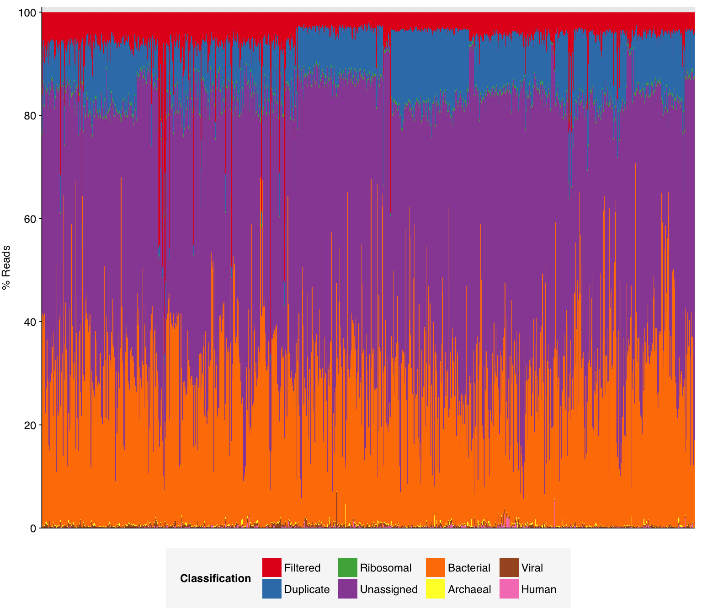
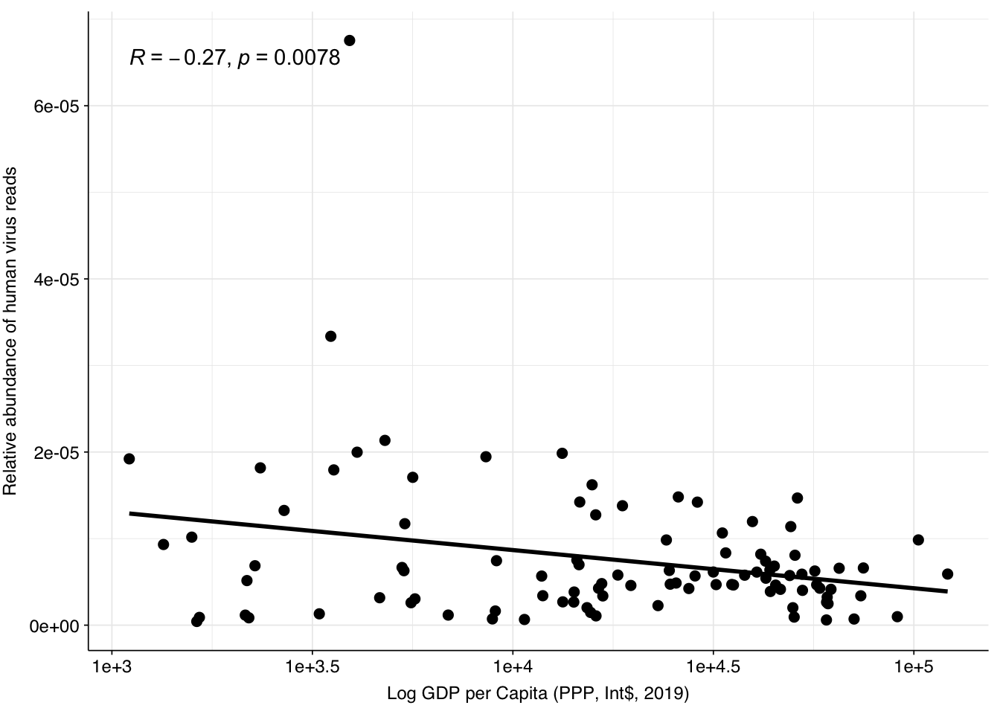
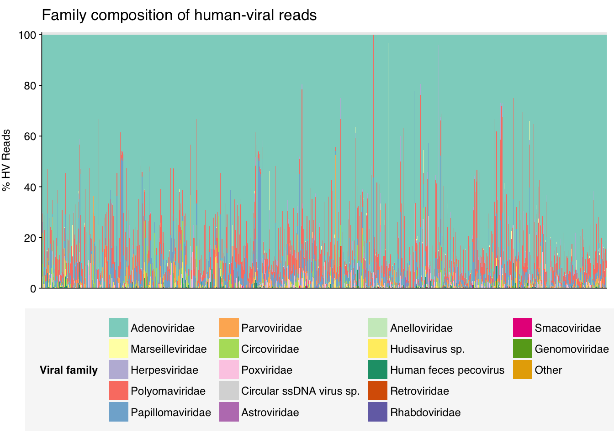
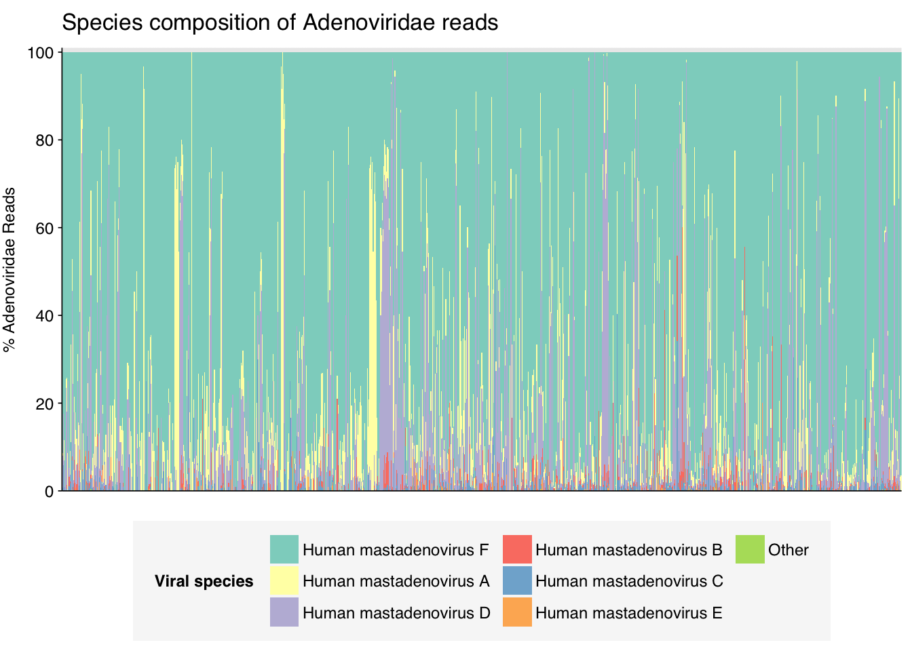
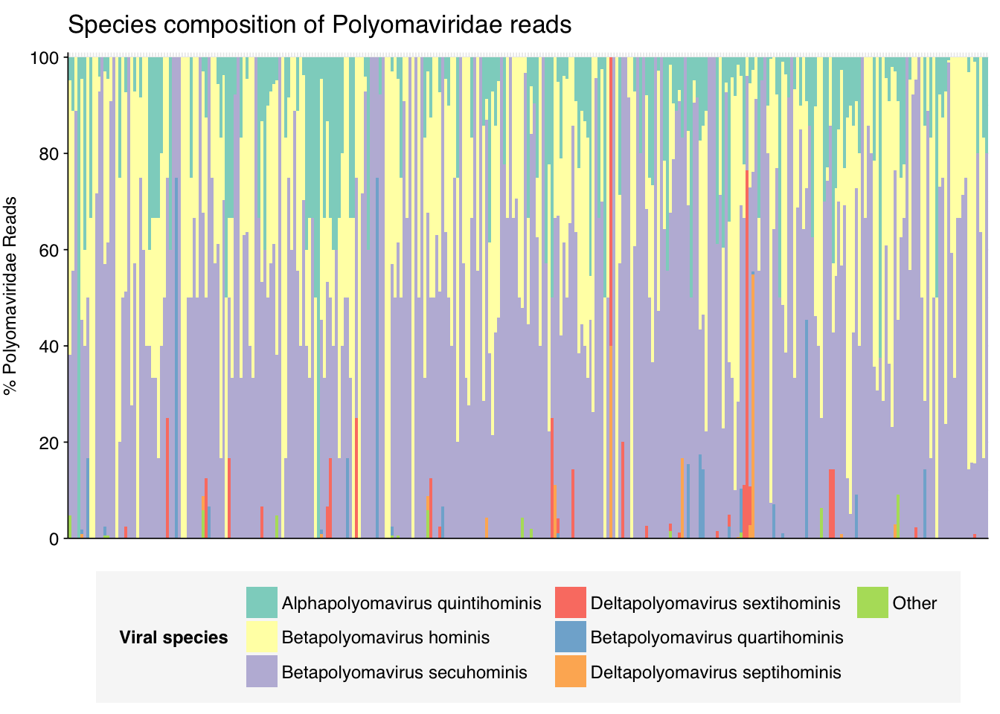
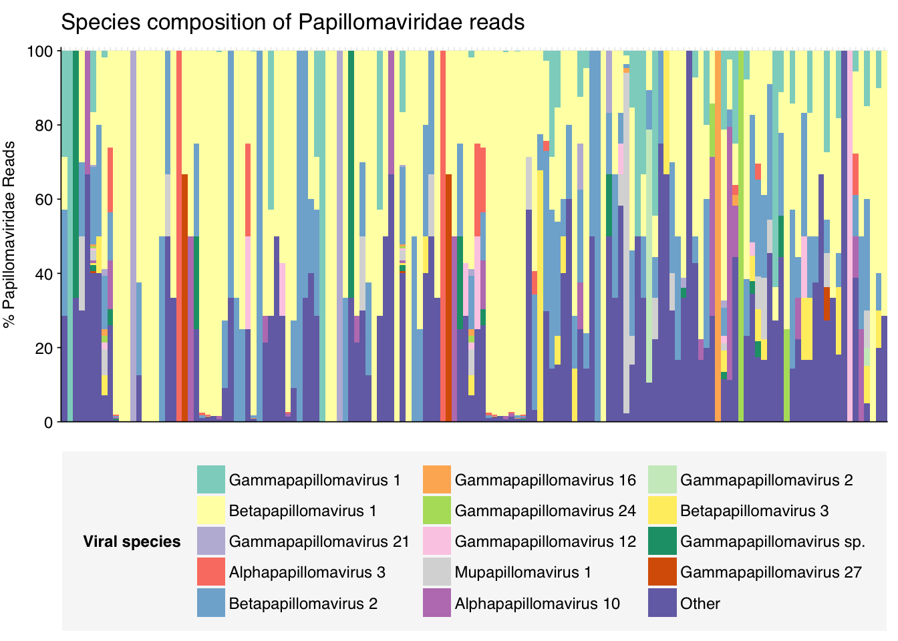
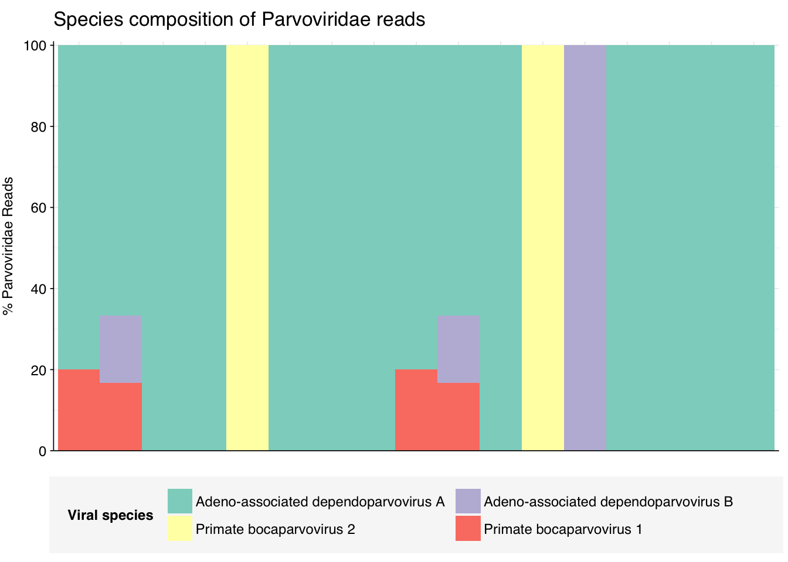
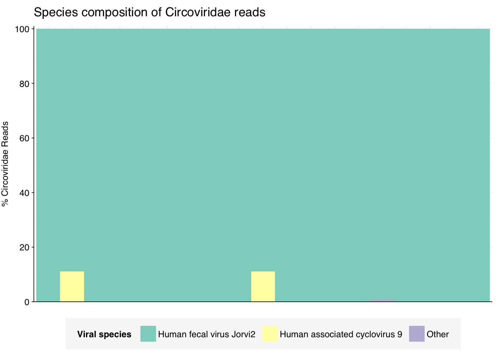
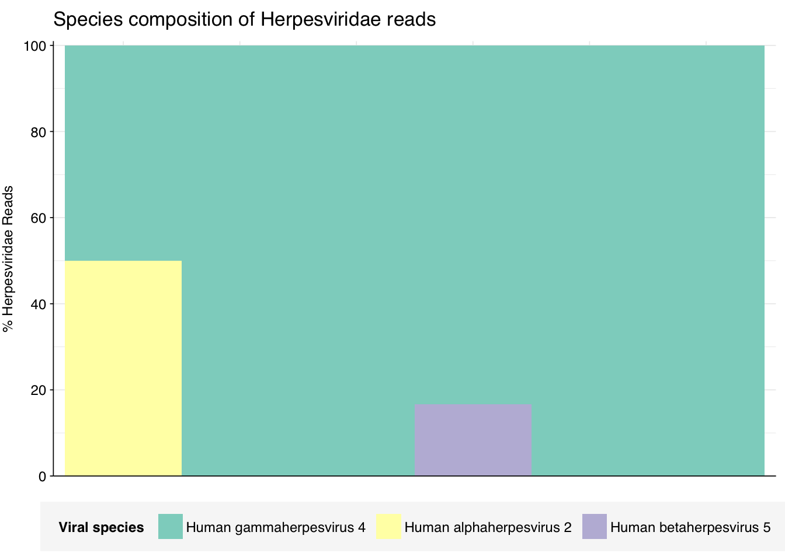

The final dataset from the P2RA dataset I want to analyze here is Munk et al. (2022), an enormous dataset of >1,000 raw influent samples from 101 countries collected between 2016 and 2019. As in previous DNA studies like Bengtsson-Palme, samples were centrifuged and only the pellet was retained for sequencing, so we expect viral abundance to be low; nevertheless, this is the largest and most comprehensive DNA wastewater dataset we’ve been able to find to date, so it’s worth having a look at what’s in it. The pellet from each sample was resuspended, was homogenized with bead-beating, underwent DNA extraction and library prep, and was sequenced using Illumina technology; earlier samples were sequenced on an Illumina HiSeq3000, while later samples were sequenced on a NovaSeq6000, both with 2x150bp reads.
The raw data
The Munk data comprised 1,189 total samples, of which 1,185 had complete metadata. These samples came from 101 countries, with the largest number of samples coming from the USA, Canada, and Denmark:
Code
# Importing the data is a bit more complicated this time as the samples are split across seven (!) pipeline runsdata_dir_base<-"../data/2024-05-06_munk"data_dirs<-list.dirs(data_dir_base, recursive =FALSE)# Data input pathslibraries_paths<-file.path(data_dirs, "sample-metadata.csv")basic_stats_paths<-file.path(data_dirs, "qc_basic_stats.tsv.gz")adapter_stats_paths<-file.path(data_dirs, "qc_adapter_stats.tsv.gz")quality_base_stats_paths<-file.path(data_dirs, "qc_quality_base_stats.tsv.gz")quality_seq_stats_paths<-file.path(data_dirs, "qc_quality_sequence_stats.tsv.gz")# Import libraries and extract metadata from sample namesctypes<-cols(date="D", .default="c")libraries_raw<-lapply(libraries_paths, read_csv, col_types =ctypes)%>%bind_rowslibraries<-libraries_raw%>%# Add missing datesmutate(date =ifelse(sample=="ERR4682809", as_date("2018-06-01"), date), date =ifelse(sample=="ERR4682803", as_date("2018-06-01"), date), date =ifelse(sample=="ERR2683170", as_date("2017-06-01"), date))%>%# Filter samples with unknown datesfilter(!is.na(date))%>%arrange(date, country, city)%>%mutate(sample =fct_inorder(sample), date=as_date(date))
The 1,185 libraries included in this analysis varied dramatically in size, from 33,554 read pairs to over 123 million. The mean number of read pairs per library was 33.5M, and the dataset as a whole comprised 39.7B read pairs and almost 12 terabases of sequence:
Code
# Import QC datastages<-c("raw_concat", "cleaned", "dedup", "ribo_initial", "ribo_secondary")import_basic<-function(paths){lapply(paths, read_tsv, show_col_types =FALSE)%>%bind_rows%>%inner_join(libraries, by="sample")%>%arrange(sample)%>%mutate(stage =factor(stage, levels =stages), sample =fct_inorder(sample))}import_basic_paired<-function(paths){import_basic(paths)%>%arrange(read_pair)%>%mutate(read_pair =fct_inorder(as.character(read_pair)))}basic_stats<-import_basic(basic_stats_paths)adapter_stats<-import_basic_paired(adapter_stats_paths)quality_base_stats<-import_basic_paired(quality_base_stats_paths)quality_seq_stats<-import_basic_paired(quality_seq_stats_paths)# Identify small and large datasetsbasic_stats_raw<-basic_stats%>%filter(stage=="raw_concat")libraries_small<-basic_stats_raw%>%filter(n_read_pairs<=1e7)%>%pull(library)libraries<-libraries%>%mutate(small =library%in%libraries_small)basic_stats<-basic_stats%>%mutate(small =library%in%libraries_small)adapter_stats<-adapter_stats%>%mutate(small =library%in%libraries_small)quality_base_stats<-quality_base_stats%>%mutate(small =library%in%libraries_small)quality_seq_stats<-quality_seq_stats%>%mutate(small =library%in%libraries_small)# Filter to raw databasic_stats_raw<-basic_stats%>%filter(stage=="raw_concat")adapter_stats_raw<-adapter_stats%>%filter(stage=="raw_concat")quality_base_stats_raw<-quality_base_stats%>%filter(stage=="raw_concat")quality_seq_stats_raw<-quality_seq_stats%>%filter(stage=="raw_concat")# Get key values for readoutraw_read_counts<-basic_stats_raw%>%ungroup%>%summarize(rmin =min(n_read_pairs), rmax=max(n_read_pairs), rmean=mean(n_read_pairs), rtot =sum(n_read_pairs), btot =sum(n_bases_approx), dmin =min(percent_duplicates), dmax=max(percent_duplicates), dmean=mean(percent_duplicates), .groups ="drop")
About 6% of reads on average were lost during cleaning, and a further 10% during deduplication; however, in both cases a minority of samples lost much larger read fractions. Very few reads were lost during ribodepletion, as expected for DNA sequencing libraries.
According to FASTQC, cleaning + deduplication was mostly effective at reducing measured duplicate levels, though a few samples retained high measured duplicate levels throughout the pipeline:
As before, to assess the high-level composition of the reads, I ran the ribodepleted files through Kraken (using the Standard 16 database) and summarized the results with Bracken. Combining these results with the read counts above gives us a breakdown of the inferred composition of the samples:
# Prepare plotting templatesg_comp_base<-ggplot(mapping=aes(x=sample, y=p_reads, fill=classification))+theme_xblank+theme(axis.ticks.x =element_blank())scale_y_pc_reads<-purrr::partial(scale_y_continuous, name ="% Reads", expand =c(0,0), labels =function(y)y*100)# Plot overall compositiong_comp<-g_comp_base+geom_col(data =comp, position ="stack", width=1)+scale_y_pc_reads(limits =c(0,1.01), breaks =seq(0,1,0.2))+scale_fill_brewer(palette ="Set1", name ="Classification")g_comp

Code
# Plot composition of minor componentscomp_minor<-comp%>%filter(classification%in%c("Archaeal", "Viral", "Human", "Other"))palette_minor<-brewer.pal(9, "Set1")[6:9]g_comp_minor<-g_comp_base+geom_col(data=comp_minor, position ="stack", width=1)+scale_y_pc_reads()+scale_fill_manual(values=palette_minor, name ="Classification")g_comp_minor
As in previous DNA datasets, the vast majority of classified reads were bacterial in origin. Viral fraction averaged 0.33%, higher than in other DNA wastewater datasets I’ve looked at, and reached >1% in 35 samples. As is common for DNA wastewater data, viral reads were overwhelmingly dominated by Caudoviricetes phages, though Quintoviricetes (parvoviruses) also showed significant prevalence in some samples:
Next, I investigated the human-infecting virus read content of these unenriched samples. A grand total of 331,452 reads were identified as putatively human-viral:
# Get raw read countsread_counts_raw<-basic_stats_raw%>%select(sample, n_reads_raw =n_read_pairs)# Get HV read countsmrg_hv<-mrg%>%mutate(hv_status =assigned_hv|highscore)%>%rename(taxid_all =taxid, taxid =taxid_best)read_counts_hv<-mrg_hv%>%filter(hv_status)%>%group_by(sample)%>%count(name="n_reads_hv")read_counts<-read_counts_raw%>%left_join(read_counts_hv, by="sample")%>%mutate(n_reads_hv =replace_na(n_reads_hv, 0))%>%inner_join(libraries, by="sample")# Aggregateread_counts_grp<-read_counts%>%group_by(country)%>%summarize(n_reads_raw =sum(n_reads_raw), n_reads_hv =sum(n_reads_hv), n_samples =n(), .groups="drop")%>%mutate(sample="All samples")read_counts_tot<-read_counts_grp%>%group_by(sample)%>%summarize(n_reads_raw =sum(n_reads_raw), n_reads_hv =sum(n_reads_hv), .groups="drop")%>%mutate(country="All countries")read_counts_agg<-bind_rows(read_counts_grp, read_counts_tot)%>%mutate(p_reads_hv =n_reads_hv/n_reads_raw, sample =factor(sample, levels=c(levels(libraries$sample), "All samples")))
Applying a disjunctive cutoff at S=20 identifies 325,390 read pairs as human-viral. This gives an overall relative HV abundance of \(8.19 \times 10^{-6}\); higher than any other DNA WW dataset I’ve analyzed and competitive with many RNA datasets:
Code
# Visualizeg_phv_agg<-ggplot(read_counts_agg, aes(x=country))+geom_point(aes(y=p_reads_hv))+scale_y_log10("Relative abundance of human virus reads")+theme_kit+theme(axis.text.x =element_text(size=rel(0.5)))g_phv_agg
One potential explanation for the higher HV fraction in the Munk data compared to other DNA WW datasets is the sample location: whereas Brinch, Maritz, Bengtsson-Palme and Ng are all from highly developed economies with good sanitation, Munk includes samples from numerous countries including many with much lower incomes and development scores. To quickly test this, I took the most recent Human Development Index dataset from the UN (20221) and GDP per capita dataset from the World Bank (PPP, 2019). In both cases, there was a weak negative correlation between the development metric and measured human-viral load:
# GDPgdp_path<-file.path(data_dir_base, "gdp.csv")gdp<-read_csv(gdp_path, show_col_types =FALSE)read_counts_gdp<-inner_join(read_counts_grp, gdp, by="country")%>%mutate(p_reads_hv =n_reads_hv/n_reads_raw, log_p =log10(p_reads_hv), log_gdp =log10(gdp_per_capita_ppp))g_gdp<-ggscatter(read_counts_gdp, x="log_gdp", y="p_reads_hv", add ="reg.line")+stat_cor(method ="pearson")+scale_x_continuous("Log GDP per Capita (PPP, Int$, 2019)", labels =function(x)paste0("1e+", x))+scale_y_continuous("Relative abundance of human virus reads")+theme_baseg_gdp

Human-infecting viruses: taxonomy and composition
In investigating the taxonomy of human-infecting virus reads, I restricted my analysis to samples with more than 5 HV read pairs total across all viruses, to reduce noise arising from extremely low HV read counts in some samples. 1,129 samples met this criterion.
As usual, at the family level, most samples were dominated by Adenoviridae, Polyomaviridae and Papillomaviridae. Three other families, Parvoviridae, Circoviridae and Herpesviridae, also showed substantial prevalence.
Code
# Get viral taxon names for putative HV readsviral_taxa$name[viral_taxa$taxid==249588]<-"Mamastrovirus"viral_taxa$name[viral_taxa$taxid==194960]<-"Kobuvirus"viral_taxa$name[viral_taxa$taxid==688449]<-"Salivirus"viral_taxa$name[viral_taxa$taxid==585893]<-"Picobirnaviridae"viral_taxa$name[viral_taxa$taxid==333922]<-"Betapapillomavirus"viral_taxa$name[viral_taxa$taxid==334207]<-"Betapapillomavirus 3"viral_taxa$name[viral_taxa$taxid==369960]<-"Porcine type-C oncovirus"viral_taxa$name[viral_taxa$taxid==333924]<-"Betapapillomavirus 2"viral_taxa$name[viral_taxa$taxid==687329]<-"Anelloviridae"viral_taxa$name[viral_taxa$taxid==325455]<-"Gammapapillomavirus"viral_taxa$name[viral_taxa$taxid==333750]<-"Alphapapillomavirus"viral_taxa$name[viral_taxa$taxid==694002]<-"Betacoronavirus"viral_taxa$name[viral_taxa$taxid==334202]<-"Mupapillomavirus"viral_taxa$name[viral_taxa$taxid==197911]<-"Alphainfluenzavirus"viral_taxa$name[viral_taxa$taxid==186938]<-"Respirovirus"viral_taxa$name[viral_taxa$taxid==333926]<-"Gammapapillomavirus 1"viral_taxa$name[viral_taxa$taxid==337051]<-"Betapapillomavirus 1"viral_taxa$name[viral_taxa$taxid==337043]<-"Alphapapillomavirus 4"viral_taxa$name[viral_taxa$taxid==694003]<-"Betacoronavirus 1"viral_taxa$name[viral_taxa$taxid==334204]<-"Mupapillomavirus 2"viral_taxa$name[viral_taxa$taxid==334208]<-"Betapapillomavirus 4"viral_taxa$name[viral_taxa$taxid==333928]<-"Gammapapillomavirus 2"viral_taxa$name[viral_taxa$taxid==337039]<-"Alphapapillomavirus 2"viral_taxa$name[viral_taxa$taxid==333929]<-"Gammapapillomavirus 3"viral_taxa$name[viral_taxa$taxid==337042]<-"Alphapapillomavirus 7"viral_taxa$name[viral_taxa$taxid==334203]<-"Mupapillomavirus 1"viral_taxa$name[viral_taxa$taxid==333757]<-"Alphapapillomavirus 8"viral_taxa$name[viral_taxa$taxid==337050]<-"Alphapapillomavirus 6"viral_taxa$name[viral_taxa$taxid==333767]<-"Alphapapillomavirus 3"viral_taxa$name[viral_taxa$taxid==333754]<-"Alphapapillomavirus 10"viral_taxa$name[viral_taxa$taxid==687363]<-"Torque teno virus 24"viral_taxa$name[viral_taxa$taxid==687342]<-"Torque teno virus 3"viral_taxa$name[viral_taxa$taxid==687359]<-"Torque teno virus 20"viral_taxa$name[viral_taxa$taxid==194441]<-"Primate T-lymphotropic virus 2"viral_taxa$name[viral_taxa$taxid==334209]<-"Betapapillomavirus 5"viral_taxa$name[viral_taxa$taxid==194965]<-"Aichivirus B"viral_taxa$name[viral_taxa$taxid==333930]<-"Gammapapillomavirus 4"viral_taxa$name[viral_taxa$taxid==337048]<-"Alphapapillomavirus 1"viral_taxa$name[viral_taxa$taxid==337041]<-"Alphapapillomavirus 9"viral_taxa$name[viral_taxa$taxid==337049]<-"Alphapapillomavirus 11"viral_taxa$name[viral_taxa$taxid==337044]<-"Alphapapillomavirus 5"# Filter samples and add viral taxa informationsamples_keep<-read_counts%>%filter(n_reads_hv>5)%>%pull(sample)mrg_hv_named<-mrg_hv%>%filter(sample%in%samples_keep, hv_status)%>%left_join(viral_taxa, by="taxid")# Discover viral species & genera for HV readsraise_rank<-function(read_db, taxid_db, out_rank="species", verbose=FALSE){# Get higher ranks than search rankranks<-c("subspecies", "species", "subgenus", "genus", "subfamily", "family", "suborder", "order", "class", "subphylum", "phylum", "kingdom", "superkingdom")rank_match<-which.max(ranks==out_rank)high_ranks<-ranks[rank_match:length(ranks)]# Merge read DB and taxid DBreads<-read_db%>%select(-parent_taxid, -rank, -name)%>%left_join(taxid_db, by="taxid")# Extract sequences that are already at appropriate rankreads_rank<-filter(reads, rank==out_rank)# Drop sequences at a higher rank and return unclassified sequencesreads_norank<-reads%>%filter(rank!=out_rank, !rank%in%high_ranks, !is.na(taxid))while(nrow(reads_norank)>0){# As long as there are unclassified sequences...# Promote read taxids and re-merge with taxid DB, then re-classify and filterreads_remaining<-reads_norank%>%mutate(taxid =parent_taxid)%>%select(-parent_taxid, -rank, -name)%>%left_join(taxid_db, by="taxid")reads_rank<-reads_remaining%>%filter(rank==out_rank)%>%bind_rows(reads_rank)reads_norank<-reads_remaining%>%filter(rank!=out_rank, !rank%in%high_ranks, !is.na(taxid))}# Finally, extract and append reads that were excluded during the processreads_dropped<-reads%>%filter(!seq_id%in%reads_rank$seq_id)reads_out<-reads_rank%>%bind_rows(reads_dropped)%>%select(-parent_taxid, -rank, -name)%>%left_join(taxid_db, by="taxid")return(reads_out)}hv_reads_species<-raise_rank(mrg_hv_named, viral_taxa, "species")hv_reads_genus<-raise_rank(mrg_hv_named, viral_taxa, "genus")hv_reads_family<-raise_rank(mrg_hv_named, viral_taxa, "family")
Code
threshold_major_family<-0.02# Count reads for each human-viral familyhv_family_counts<-hv_reads_family%>%group_by(sample, name, taxid)%>%count(name ="n_reads_hv")%>%group_by(sample)%>%mutate(p_reads_hv =n_reads_hv/sum(n_reads_hv))# Identify high-ranking families and group othershv_family_major_tab<-hv_family_counts%>%group_by(name)%>%filter(p_reads_hv==max(p_reads_hv))%>%filter(row_number()==1)%>%arrange(desc(p_reads_hv))%>%filter(p_reads_hv>threshold_major_family)hv_family_counts_major<-hv_family_counts%>%mutate(name_display =ifelse(name%in%hv_family_major_tab$name, name, "Other"))%>%group_by(sample, name_display)%>%summarize(n_reads_hv =sum(n_reads_hv), p_reads_hv =sum(p_reads_hv), .groups="drop")%>%mutate(name_display =factor(name_display, levels =c(hv_family_major_tab$name, "Other")))hv_family_counts_display<-hv_family_counts_major%>%rename(p_reads =p_reads_hv, classification =name_display)# Plotg_hv_family<-g_comp_base+geom_col(data=hv_family_counts_display, position ="stack", width=1)+scale_y_continuous(name="% HV Reads", limits=c(0,1.01), breaks =seq(0,1,0.2), expand=c(0,0), labels =function(y)y*100)+scale_fill_manual(values=palette_viral, name ="Viral family")+labs(title="Family composition of human-viral reads")+guides(fill=guide_legend(ncol=4))+theme(plot.title =element_text(size=rel(1.4), hjust=0, face="plain"))g_hv_family

Code
# Get most prominent families for texthv_family_collate<-hv_family_counts%>%group_by(name, taxid)%>%summarize(n_reads_tot =sum(n_reads_hv), p_reads_max =max(p_reads_hv), .groups="drop")%>%arrange(desc(n_reads_tot))
In investigating individual viral families, to avoid distortions from a few rare reads, I restricted myself to samples where that family made up at least 10% of human-viral reads:
Code
threshold_major_species<-0.05taxid_adeno<-10508# Get set of adenoviridae readsadeno_samples<-hv_family_counts%>%filter(taxid==taxid_adeno)%>%filter(p_reads_hv>=0.1)%>%pull(sample)adeno_ids<-hv_reads_family%>%filter(taxid==taxid_adeno, sample%in%adeno_samples)%>%pull(seq_id)# Count reads for each adenoviridae speciesadeno_species_counts<-hv_reads_species%>%filter(seq_id%in%adeno_ids)%>%group_by(sample, name, taxid)%>%count(name ="n_reads_hv")%>%group_by(sample)%>%mutate(p_reads_adeno =n_reads_hv/sum(n_reads_hv))# Identify high-ranking families and group othersadeno_species_major_tab<-adeno_species_counts%>%group_by(name)%>%filter(p_reads_adeno==max(p_reads_adeno))%>%filter(row_number()==1)%>%arrange(desc(p_reads_adeno))%>%filter(p_reads_adeno>threshold_major_species)adeno_species_counts_major<-adeno_species_counts%>%mutate(name_display =ifelse(name%in%adeno_species_major_tab$name, name, "Other"))%>%group_by(sample, name_display)%>%summarize(n_reads_adeno =sum(n_reads_hv), p_reads_adeno =sum(p_reads_adeno), .groups="drop")%>%mutate(name_display =factor(name_display, levels =c(adeno_species_major_tab$name, "Other")))adeno_species_counts_display<-adeno_species_counts_major%>%rename(p_reads =p_reads_adeno, classification =name_display)# Plotg_adeno_species<-g_comp_base+geom_col(data=adeno_species_counts_display, position ="stack", width=1)+scale_y_continuous(name="% Adenoviridae Reads", limits=c(0,1.01), breaks =seq(0,1,0.2), expand=c(0,0), labels =function(y)y*100)+scale_fill_manual(values=palette_viral, name ="Viral species")+labs(title="Species composition of Adenoviridae reads")+guides(fill=guide_legend(ncol=3))+theme(plot.title =element_text(size=rel(1.4), hjust=0, face="plain"))g_adeno_species

Code
# Get most prominent species for textadeno_species_collate<-adeno_species_counts%>%group_by(name, taxid)%>%summarize(n_reads_tot =sum(n_reads_hv), p_reads_mean =mean(p_reads_adeno), .groups="drop")%>%arrange(desc(n_reads_tot))
Code
threshold_major_species<-0.1taxid_polyoma<-151341# Get set of polyomaviridae readspolyoma_samples<-hv_family_counts%>%filter(taxid==taxid_polyoma)%>%filter(p_reads_hv>=0.1)%>%pull(sample)polyoma_ids<-hv_reads_family%>%filter(taxid==taxid_polyoma, sample%in%polyoma_samples)%>%pull(seq_id)# Count reads for each polyomaviridae speciespolyoma_species_counts<-hv_reads_species%>%filter(seq_id%in%polyoma_ids)%>%group_by(sample, name, taxid)%>%count(name ="n_reads_hv")%>%group_by(sample)%>%mutate(p_reads_polyoma =n_reads_hv/sum(n_reads_hv))# Identify high-ranking families and group otherspolyoma_species_major_tab<-polyoma_species_counts%>%group_by(name)%>%filter(p_reads_polyoma==max(p_reads_polyoma))%>%filter(row_number()==1)%>%arrange(desc(p_reads_polyoma))%>%filter(p_reads_polyoma>threshold_major_species)polyoma_species_counts_major<-polyoma_species_counts%>%mutate(name_display =ifelse(name%in%polyoma_species_major_tab$name, name, "Other"))%>%group_by(sample, name_display)%>%summarize(n_reads_polyoma =sum(n_reads_hv), p_reads_polyoma =sum(p_reads_polyoma), .groups="drop")%>%mutate(name_display =factor(name_display, levels =c(polyoma_species_major_tab$name, "Other")))polyoma_species_counts_display<-polyoma_species_counts_major%>%rename(p_reads =p_reads_polyoma, classification =name_display)# Plotg_polyoma_species<-g_comp_base+geom_col(data=polyoma_species_counts_display, position ="stack", width=1)+scale_y_continuous(name="% Polyomaviridae Reads", limits=c(0,1.01), breaks =seq(0,1,0.2), expand=c(0,0), labels =function(y)y*100)+scale_fill_manual(values=palette_viral, name ="Viral species")+labs(title="Species composition of Polyomaviridae reads")+guides(fill=guide_legend(ncol=3))+theme(plot.title =element_text(size=rel(1.4), hjust=0, face="plain"))g_polyoma_species

Code
# Get most prominent species for textpolyoma_species_collate<-polyoma_species_counts%>%group_by(name, taxid)%>%summarize(n_reads_tot =sum(n_reads_hv), p_reads_mean =mean(p_reads_polyoma), .groups="drop")%>%arrange(desc(n_reads_tot))
Code
threshold_major_species<-0.5taxid_papilloma<-151340# Get set of papillomaviridae readspapilloma_samples<-hv_family_counts%>%filter(taxid==taxid_papilloma)%>%filter(p_reads_hv>=0.1)%>%pull(sample)papilloma_ids<-hv_reads_family%>%filter(taxid==taxid_papilloma, sample%in%papilloma_samples)%>%pull(seq_id)# Count reads for each papillomaviridae speciespapilloma_species_counts<-hv_reads_species%>%filter(seq_id%in%papilloma_ids)%>%group_by(sample, name, taxid)%>%count(name ="n_reads_hv")%>%group_by(sample)%>%mutate(p_reads_papilloma =n_reads_hv/sum(n_reads_hv))# Identify high-ranking families and group otherspapilloma_species_major_tab<-papilloma_species_counts%>%group_by(name)%>%filter(p_reads_papilloma==max(p_reads_papilloma))%>%filter(row_number()==1)%>%arrange(desc(p_reads_papilloma))%>%filter(p_reads_papilloma>threshold_major_species)papilloma_species_counts_major<-papilloma_species_counts%>%mutate(name_display =ifelse(name%in%papilloma_species_major_tab$name, name, "Other"))%>%group_by(sample, name_display)%>%summarize(n_reads_papilloma =sum(n_reads_hv), p_reads_papilloma =sum(p_reads_papilloma), .groups="drop")%>%mutate(name_display =factor(name_display, levels =c(papilloma_species_major_tab$name, "Other")))papilloma_species_counts_display<-papilloma_species_counts_major%>%rename(p_reads =p_reads_papilloma, classification =name_display)# Plotg_papilloma_species<-g_comp_base+geom_col(data=papilloma_species_counts_display, position ="stack", width=1)+scale_y_continuous(name="% Papillomaviridae Reads", limits=c(0,1.01), breaks =seq(0,1,0.2), expand=c(0,0), labels =function(y)y*100)+scale_fill_manual(values=palette_viral, name ="Viral species")+labs(title="Species composition of Papillomaviridae reads")+guides(fill=guide_legend(ncol=3))+theme(plot.title =element_text(size=rel(1.4), hjust=0, face="plain"))g_papilloma_species

Code
# Get most prominent species for textpapilloma_species_collate<-papilloma_species_counts%>%group_by(name, taxid)%>%summarize(n_reads_tot =sum(n_reads_hv), p_reads_mean =mean(p_reads_papilloma), .groups="drop")%>%arrange(desc(n_reads_tot))
Code
threshold_major_species<-0.1taxid_parvo<-10780# Get set of parvoviridae readsparvo_samples<-hv_family_counts%>%filter(taxid==taxid_parvo)%>%filter(p_reads_hv>=0.1)%>%pull(sample)parvo_ids<-hv_reads_family%>%filter(taxid==taxid_parvo, sample%in%parvo_samples)%>%pull(seq_id)# Count reads for each parvoviridae speciesparvo_species_counts<-hv_reads_species%>%filter(seq_id%in%parvo_ids)%>%group_by(sample, name, taxid)%>%count(name ="n_reads_hv")%>%group_by(sample)%>%mutate(p_reads_parvo =n_reads_hv/sum(n_reads_hv))# Identify high-ranking families and group othersparvo_species_major_tab<-parvo_species_counts%>%group_by(name)%>%filter(p_reads_parvo==max(p_reads_parvo))%>%filter(row_number()==1)%>%arrange(desc(p_reads_parvo))%>%filter(p_reads_parvo>threshold_major_species)parvo_species_counts_major<-parvo_species_counts%>%mutate(name_display =ifelse(name%in%parvo_species_major_tab$name, name, "Other"))%>%group_by(sample, name_display)%>%summarize(n_reads_parvo =sum(n_reads_hv), p_reads_parvo =sum(p_reads_parvo), .groups="drop")%>%mutate(name_display =factor(name_display, levels =c(parvo_species_major_tab$name, "Other")))parvo_species_counts_display<-parvo_species_counts_major%>%rename(p_reads =p_reads_parvo, classification =name_display)# Plotg_parvo_species<-g_comp_base+geom_col(data=parvo_species_counts_display, position ="stack", width=1)+scale_y_continuous(name="% Parvoviridae Reads", limits=c(0,1.01), breaks =seq(0,1,0.2), expand=c(0,0), labels =function(y)y*100)+scale_fill_manual(values=palette_viral, name ="Viral species")+labs(title="Species composition of Parvoviridae reads")+guides(fill=guide_legend(ncol=3))+theme(plot.title =element_text(size=rel(1.4), hjust=0, face="plain"))g_parvo_species

Code
# Get most prominent species for textparvo_species_collate<-parvo_species_counts%>%group_by(name, taxid)%>%summarize(n_reads_tot =sum(n_reads_hv), p_reads_mean =mean(p_reads_parvo), .groups="drop")%>%arrange(desc(n_reads_tot))
Code
threshold_major_species<-0.1taxid_circo<-39724# Get set of circoviridae readscirco_samples<-hv_family_counts%>%filter(taxid==taxid_circo)%>%filter(p_reads_hv>=0.1)%>%pull(sample)circo_ids<-hv_reads_family%>%filter(taxid==taxid_circo, sample%in%circo_samples)%>%pull(seq_id)# Count reads for each circoviridae speciescirco_species_counts<-hv_reads_species%>%filter(seq_id%in%circo_ids)%>%group_by(sample, name, taxid)%>%count(name ="n_reads_hv")%>%group_by(sample)%>%mutate(p_reads_circo =n_reads_hv/sum(n_reads_hv))# Identify high-ranking families and group otherscirco_species_major_tab<-circo_species_counts%>%group_by(name)%>%filter(p_reads_circo==max(p_reads_circo))%>%filter(row_number()==1)%>%arrange(desc(p_reads_circo))%>%filter(p_reads_circo>threshold_major_species)circo_species_counts_major<-circo_species_counts%>%mutate(name_display =ifelse(name%in%circo_species_major_tab$name, name, "Other"))%>%group_by(sample, name_display)%>%summarize(n_reads_circo =sum(n_reads_hv), p_reads_circo =sum(p_reads_circo), .groups="drop")%>%mutate(name_display =factor(name_display, levels =c(circo_species_major_tab$name, "Other")))circo_species_counts_display<-circo_species_counts_major%>%rename(p_reads =p_reads_circo, classification =name_display)# Plotg_circo_species<-g_comp_base+geom_col(data=circo_species_counts_display, position ="stack", width=1)+scale_y_continuous(name="% Circoviridae Reads", limits=c(0,1.01), breaks =seq(0,1,0.2), expand=c(0,0), labels =function(y)y*100)+scale_fill_manual(values=palette_viral, name ="Viral species")+labs(title="Species composition of Circoviridae reads")+guides(fill=guide_legend(ncol=3))+theme(plot.title =element_text(size=rel(1.4), hjust=0, face="plain"))g_circo_species

Code
# Get most prominent species for textcirco_species_collate<-circo_species_counts%>%group_by(name, taxid)%>%summarize(n_reads_tot =sum(n_reads_hv), p_reads_mean =mean(p_reads_circo), .groups="drop")%>%arrange(desc(n_reads_tot))
Code
threshold_major_species<-0.1taxid_herpes<-10292# Get set of herpesviridae readsherpes_samples<-hv_family_counts%>%filter(taxid==taxid_herpes)%>%filter(p_reads_hv>=0.1)%>%pull(sample)herpes_ids<-hv_reads_family%>%filter(taxid==taxid_herpes, sample%in%herpes_samples)%>%pull(seq_id)# Count reads for each herpesviridae speciesherpes_species_counts<-hv_reads_species%>%filter(seq_id%in%herpes_ids)%>%group_by(sample, name, taxid)%>%count(name ="n_reads_hv")%>%group_by(sample)%>%mutate(p_reads_herpes =n_reads_hv/sum(n_reads_hv))# Identify high-ranking families and group othersherpes_species_major_tab<-herpes_species_counts%>%group_by(name)%>%filter(p_reads_herpes==max(p_reads_herpes))%>%filter(row_number()==1)%>%arrange(desc(p_reads_herpes))%>%filter(p_reads_herpes>threshold_major_species)herpes_species_counts_major<-herpes_species_counts%>%mutate(name_display =ifelse(name%in%herpes_species_major_tab$name, name, "Other"))%>%group_by(sample, name_display)%>%summarize(n_reads_herpes =sum(n_reads_hv), p_reads_herpes =sum(p_reads_herpes), .groups="drop")%>%mutate(name_display =factor(name_display, levels =c(herpes_species_major_tab$name, "Other")))herpes_species_counts_display<-herpes_species_counts_major%>%rename(p_reads =p_reads_herpes, classification =name_display)# Plotg_herpes_species<-g_comp_base+geom_col(data=herpes_species_counts_display, position ="stack", width=1)+scale_y_continuous(name="% Herpesviridae Reads", limits=c(0,1.01), breaks =seq(0,1,0.2), expand=c(0,0), labels =function(y)y*100)+scale_fill_manual(values=palette_viral, name ="Viral species")+labs(title="Species composition of Herpesviridae reads")+guides(fill=guide_legend(ncol=3))+theme(plot.title =element_text(size=rel(1.4), hjust=0, face="plain"))g_herpes_species

Code
# Get most prominent species for textherpes_species_collate<-herpes_species_counts%>%group_by(name, taxid)%>%summarize(n_reads_tot =sum(n_reads_hv), p_reads_mean =mean(p_reads_herpes), .groups="drop")%>%arrange(desc(n_reads_tot))
Finally, here again are the overall relative abundances of the specific viral genera I picked out manually in my last entry:
This is the final P2RA dataset I needed to analyze before we finish re-doing that analysis for publication, so I’m pretty happy to have it done. In terms of the results, things mostly look similar to other DNA WW datasets I’ve looked at, with the notable difference that the total fraction of human-infecting viruses is significantly higher. I’m still not sure what’s causing this elevation; the methods used in this study don’t seem any different from other studies that got much lower fractions, and the fact that this study sampled from developing countries seems like only a partial explanation.
Footnotes
I wasn’t able to quickly find any HDI datasets other than the most recent one, and it didn’t seem worth doing serious digging for this quick analysis.↩︎
Source Code
---title: "Workflow analysis of Maritz et al. (2019)"subtitle: "Wastewater from NYC."author: "Will Bradshaw"date: 2024-05-07format: html: code-fold: true code-tools: true code-link: true df-print: pagededitor: visualtitle-block-banner: black---```{r}#| label: preamble#| include: false# Load packageslibrary(tidyverse)library(cowplot)library(patchwork)library(fastqcr)library(RColorBrewer)library(ggpubr)source("../scripts/aux_plot-theme.R")# GGplot themes and scalestheme_base <- theme_base +theme(aspect.ratio =NULL)theme_rotate <- theme_base +theme(axis.text.x =element_text(hjust =1, angle =45),)theme_kit <- theme_rotate +theme(axis.title.x =element_blank(),)theme_xblank <- theme_kit +theme(axis.text.x =element_blank())tnl <-theme(legend.position ="none")```The final dataset from the P2RA dataset I want to analyze here is [Munk et al. (2022)](https://www.nature.com/articles/s41467-022-34312-7), an enormous dataset of \>1,000 raw influent samples from 101 countries collected between 2016 and 2019. As in previous DNA studies like Bengtsson-Palme, samples were centrifuged and only the pellet was retained for sequencing, so we expect viral abundance to be low; nevertheless, this is the largest and most comprehensive DNA wastewater dataset we've been able to find to date, so it's worth having a look at what's in it. The pellet from each sample was resuspended, was homogenized with bead-beating, underwent DNA extraction and library prep, and was sequenced using Illumina technology; earlier samples were sequenced on an Illumina HiSeq3000, while later samples were sequenced on a NovaSeq6000, both with 2x150bp reads.# The raw dataThe Munk data comprised 1,189 total samples, of which 1,185 had complete metadata. These samples came from 101 countries, with the largest number of samples coming from the USA, Canada, and Denmark:```{r}#| warning: false#| label: import-qc-data# Importing the data is a bit more complicated this time as the samples are split across seven (!) pipeline runsdata_dir_base <-"../data/2024-05-06_munk"data_dirs <-list.dirs(data_dir_base, recursive =FALSE)# Data input pathslibraries_paths <-file.path(data_dirs, "sample-metadata.csv")basic_stats_paths <-file.path(data_dirs, "qc_basic_stats.tsv.gz")adapter_stats_paths <-file.path(data_dirs, "qc_adapter_stats.tsv.gz")quality_base_stats_paths <-file.path(data_dirs, "qc_quality_base_stats.tsv.gz")quality_seq_stats_paths <-file.path(data_dirs, "qc_quality_sequence_stats.tsv.gz")# Import libraries and extract metadata from sample namesctypes <-cols(date="D", .default="c")libraries_raw <-lapply(libraries_paths, read_csv, col_types = ctypes) %>% bind_rowslibraries <- libraries_raw %>%# Add missing datesmutate(date =ifelse(sample =="ERR4682809", as_date("2018-06-01"), date),date =ifelse(sample =="ERR4682803", as_date("2018-06-01"), date),date =ifelse(sample =="ERR2683170", as_date("2017-06-01"), date)) %>%# Filter samples with unknown datesfilter(!is.na(date)) %>%arrange(date, country, city) %>%mutate(sample =fct_inorder(sample), date=as_date(date))``````{r}#| label: plot-countries#| fig-width: 8sample_countries <- libraries %>%group_by(country) %>% count %>% ungroup %>%mutate(p=n/sum(n)) %>%arrange(desc(p)) %>%mutate(country=fct_inorder(country))g_countries <-ggplot(sample_countries, aes(x=country, y=n)) +geom_col() +scale_y_continuous(name="# Samples", expand=c(0,0), limits=c(0,120), breaks=seq(0,200,20)) + theme_kit +theme(axis.text.x =element_text(size=rel(0.5)))g_countries```The 1,185 libraries included in this analysis varied dramatically in size, from 33,554 read pairs to over 123 million. The mean number of read pairs per library was 33.5M, and the dataset as a whole comprised 39.7B read pairs and almost 12 terabases of sequence:```{r}#| label: process-qc-data# Import QC datastages <-c("raw_concat", "cleaned", "dedup", "ribo_initial", "ribo_secondary")import_basic <-function(paths){lapply(paths, read_tsv, show_col_types =FALSE) %>% bind_rows %>%inner_join(libraries, by="sample") %>%arrange(sample) %>%mutate(stage =factor(stage, levels = stages),sample =fct_inorder(sample))}import_basic_paired <-function(paths){import_basic(paths) %>%arrange(read_pair) %>%mutate(read_pair =fct_inorder(as.character(read_pair)))}basic_stats <-import_basic(basic_stats_paths)adapter_stats <-import_basic_paired(adapter_stats_paths)quality_base_stats <-import_basic_paired(quality_base_stats_paths)quality_seq_stats <-import_basic_paired(quality_seq_stats_paths)# Identify small and large datasetsbasic_stats_raw <- basic_stats %>%filter(stage =="raw_concat")libraries_small <- basic_stats_raw %>%filter(n_read_pairs <=1e7) %>%pull(library)libraries <- libraries %>%mutate(small = library %in% libraries_small)basic_stats <- basic_stats %>%mutate(small = library %in% libraries_small)adapter_stats <- adapter_stats %>%mutate(small = library %in% libraries_small)quality_base_stats <- quality_base_stats %>%mutate(small = library %in% libraries_small)quality_seq_stats <- quality_seq_stats %>%mutate(small = library %in% libraries_small)# Filter to raw databasic_stats_raw <- basic_stats %>%filter(stage =="raw_concat")adapter_stats_raw <- adapter_stats %>%filter(stage =="raw_concat")quality_base_stats_raw <- quality_base_stats %>%filter(stage =="raw_concat")quality_seq_stats_raw <- quality_seq_stats %>%filter(stage =="raw_concat")# Get key values for readoutraw_read_counts <- basic_stats_raw %>% ungroup %>%summarize(rmin =min(n_read_pairs), rmax=max(n_read_pairs),rmean=mean(n_read_pairs), rtot =sum(n_read_pairs),btot =sum(n_bases_approx),dmin =min(percent_duplicates), dmax=max(percent_duplicates),dmean=mean(percent_duplicates), .groups ="drop")``````{r}#| fig-width: 9#| warning: false#| label: plot-basic-stats# Prepare databasic_stats_raw_metrics <- basic_stats_raw %>%select(sample, date,`# Read pairs`= n_read_pairs,`Total base pairs\n(approx)`= n_bases_approx,`% Duplicates\n(FASTQC)`= percent_duplicates) %>%pivot_longer(-(sample:date), names_to ="metric", values_to ="value") %>%mutate(metric =fct_inorder(metric))# Set up plot templatesg_basic <-ggplot(basic_stats_raw_metrics, aes(x=date, y=value)) +geom_col(position ="dodge") +scale_x_date() +scale_y_continuous(expand=c(0,0)) +expand_limits(y=c(0,100)) +facet_grid(metric~., scales ="free", space="free_x", switch="y") + theme_kit +theme(axis.title.y =element_blank(),strip.text.y =element_text(face="plain") )g_basic```Adapter levels were high, read qualities were variable (in definite need of trimming) and duplicate levels were moderate:```{r}#| label: plot-raw-quality# Set up plotting templatesg_qual_raw <-ggplot(mapping=aes(linetype=read_pair,group=interaction(sample,read_pair))) +scale_linetype_discrete(name ="Read Pair") +guides(color=guide_legend(nrow=2,byrow=TRUE),linetype =guide_legend(nrow=2,byrow=TRUE)) + theme_base# Visualize adaptersg_adapters_raw <- g_qual_raw +geom_line(aes(x=position, y=pc_adapters), data=adapter_stats_raw) +scale_y_continuous(name="% Adapters", limits=c(0,NA),breaks =seq(0,100,10), expand=c(0,0)) +scale_x_continuous(name="Position", limits=c(0,NA),breaks=seq(0,500,20), expand=c(0,0)) +facet_grid(.~adapter)g_adapters_raw# Visualize qualityg_quality_base_raw <- g_qual_raw +geom_hline(yintercept=25, linetype="dashed", color="red") +geom_hline(yintercept=30, linetype="dashed", color="red") +geom_line(aes(x=position, y=mean_phred_score), data=quality_base_stats_raw) +scale_y_continuous(name="Mean Phred score", expand=c(0,0), limits=c(10,45)) +scale_x_continuous(name="Position", limits=c(0,NA),breaks=seq(0,500,20), expand=c(0,0))g_quality_base_rawg_quality_seq_raw <- g_qual_raw +geom_vline(xintercept=25, linetype="dashed", color="red") +geom_vline(xintercept=30, linetype="dashed", color="red") +geom_line(aes(x=mean_phred_score, y=n_sequences), data=quality_seq_stats_raw) +scale_x_continuous(name="Mean Phred score", expand=c(0,0)) +scale_y_continuous(name="# Sequences", expand=c(0,0))g_quality_seq_raw```# PreprocessingAbout 6% of reads on average were lost during cleaning, and a further 10% during deduplication; however, in both cases a minority of samples lost much larger read fractions. Very few reads were lost during ribodepletion, as expected for DNA sequencing libraries.```{r}#| label: preproc-tablen_reads_rel <- basic_stats %>%select(sample, stage, percent_duplicates, n_read_pairs) %>%group_by(sample) %>%arrange(sample, stage) %>%mutate(p_reads_retained =replace_na(n_read_pairs /lag(n_read_pairs), 0),p_reads_lost =1- p_reads_retained,p_reads_retained_abs = n_read_pairs / n_read_pairs[1],p_reads_lost_abs =1-p_reads_retained_abs,p_reads_lost_abs_marginal =replace_na(p_reads_lost_abs -lag(p_reads_lost_abs), 0))n_reads_rel_display <- n_reads_rel %>%group_by(Stage=stage) %>%summarize(`% Total Reads Lost (Cumulative)`=paste0(round(min(p_reads_lost_abs*100),1), "-", round(max(p_reads_lost_abs*100),1), " (mean ", round(mean(p_reads_lost_abs*100),1), ")"),`% Total Reads Lost (Marginal)`=paste0(round(min(p_reads_lost_abs_marginal*100),1), "-", round(max(p_reads_lost_abs_marginal*100),1), " (mean ", round(mean(p_reads_lost_abs_marginal*100),1), ")"), .groups="drop") %>%filter(Stage !="raw_concat") %>%mutate(Stage = Stage %>% as.numeric %>%factor(labels=c("Trimming & filtering", "Deduplication", "Initial ribodepletion", "Secondary ribodepletion")))n_reads_rel_display``````{r}#| label: preproc-figures#| warning: false#| fig-height: 4#| fig-width: 6g_stage_base <-ggplot(mapping=aes(x=stage, group=sample)) + theme_kit# Plot reads over preprocessingg_reads_stages <- g_stage_base +geom_line(aes(y=n_read_pairs), data=basic_stats) +scale_y_continuous("# Read pairs", expand=c(0,0), limits=c(0,NA))g_reads_stages# Plot relative read losses during preprocessingg_reads_rel <- g_stage_base +geom_line(aes(y=p_reads_lost_abs_marginal), data=n_reads_rel) +scale_y_continuous("% Total Reads Lost", expand=c(0,0), labels =function(x) x*100)g_reads_rel```As usual, data cleaning was very successful at removing adapters and improving read qualities:```{r}#| warning: false#| label: plot-quality#| fig-height: 7g_qual <-ggplot(mapping=aes(linetype=read_pair, group=interaction(sample,read_pair))) +scale_linetype_discrete(name ="Read Pair") +guides(color=guide_legend(nrow=2,byrow=TRUE),linetype =guide_legend(nrow=2,byrow=TRUE)) + theme_base# Visualize adaptersg_adapters <- g_qual +geom_line(aes(x=position, y=pc_adapters), data=adapter_stats) +scale_y_continuous(name="% Adapters", limits=c(0,20),breaks =seq(0,50,10), expand=c(0,0)) +scale_x_continuous(name="Position", limits=c(0,NA),breaks=seq(0,140,20), expand=c(0,0)) +facet_grid(stage~adapter)g_adapters# Visualize qualityg_quality_base <- g_qual +geom_hline(yintercept=25, linetype="dashed", color="red") +geom_hline(yintercept=30, linetype="dashed", color="red") +geom_line(aes(x=position, y=mean_phred_score), data=quality_base_stats) +scale_y_continuous(name="Mean Phred score", expand=c(0,0), limits=c(10,45)) +scale_x_continuous(name="Position", limits=c(0,NA),breaks=seq(0,140,20), expand=c(0,0)) +facet_grid(stage~.)g_quality_baseg_quality_seq <- g_qual +geom_vline(xintercept=25, linetype="dashed", color="red") +geom_vline(xintercept=30, linetype="dashed", color="red") +geom_line(aes(x=mean_phred_score, y=n_sequences), data=quality_seq_stats) +scale_x_continuous(name="Mean Phred score", expand=c(0,0)) +scale_y_continuous(name="# Sequences", expand=c(0,0)) +facet_grid(stage~.)g_quality_seq```According to FASTQC, cleaning + deduplication was mostly effective at reducing measured duplicate levels, though a few samples retained high measured duplicate levels throughout the pipeline:```{r}#| label: preproc-dedup#| fig-height: 3.5#| fig-width: 6stage_dup <- basic_stats %>%group_by(stage) %>%summarize(dmin =min(percent_duplicates), dmax=max(percent_duplicates),dmean=mean(percent_duplicates), .groups ="drop")g_dup_stages <- g_stage_base +geom_line(aes(y=percent_duplicates), data=basic_stats) +scale_y_continuous("% Duplicates", limits=c(0,NA), expand=c(0,0))g_dup_stagesg_readlen_stages <- g_stage_base +geom_line(aes(y=mean_seq_len), data=basic_stats) +scale_y_continuous("Mean read length (nt)", expand=c(0,0), limits=c(0,NA))g_readlen_stages```# High-level compositionAs before, to assess the high-level composition of the reads, I ran the ribodepleted files through Kraken (using the Standard 16 database) and summarized the results with Bracken. Combining these results with the read counts above gives us a breakdown of the inferred composition of the samples:```{r}#| label: prepare-compositionclassifications <-c("Filtered", "Duplicate", "Ribosomal", "Unassigned","Bacterial", "Archaeal", "Viral", "Human")# Import composition datacomp_paths <-file.path(data_dirs, "taxonomic_composition.tsv.gz")comp <-lapply(comp_paths, read_tsv, show_col_types =FALSE) %>% bind_rows %>%inner_join(libraries, by="sample") %>%mutate(classification =factor(classification, levels = classifications))# Summarize compositionread_comp_summ <- comp %>%group_by(classification) %>%summarize(n_reads =sum(n_reads), .groups ="drop_last") %>%mutate(n_reads =replace_na(n_reads,0),p_reads = n_reads/sum(n_reads),pc_reads = p_reads*100)``````{r}#| label: plot-composition-all#| fig-height: 7#| fig-width: 8# Prepare plotting templatesg_comp_base <-ggplot(mapping=aes(x=sample, y=p_reads, fill=classification)) + theme_xblank +theme(axis.ticks.x =element_blank())scale_y_pc_reads <- purrr::partial(scale_y_continuous, name ="% Reads",expand =c(0,0), labels =function(y) y*100)# Plot overall compositiong_comp <- g_comp_base +geom_col(data = comp, position ="stack", width=1) +scale_y_pc_reads(limits =c(0,1.01), breaks =seq(0,1,0.2)) +scale_fill_brewer(palette ="Set1", name ="Classification")g_comp# Plot composition of minor componentscomp_minor <- comp %>%filter(classification %in%c("Archaeal", "Viral", "Human", "Other"))palette_minor <-brewer.pal(9, "Set1")[6:9]g_comp_minor <- g_comp_base +geom_col(data=comp_minor, position ="stack", width=1) +scale_y_pc_reads() +scale_fill_manual(values=palette_minor, name ="Classification")g_comp_minor``````{r}#| label: composition-summaryp_reads_summ_group <- comp %>%mutate(classification =ifelse(classification %in%c("Filtered", "Duplicate", "Unassigned"), "Excluded", as.character(classification)),classification =fct_inorder(classification)) %>%group_by(classification, sample) %>%summarize(p_reads =sum(p_reads), .groups ="drop") %>%group_by(classification) %>%summarize(pc_min =min(p_reads)*100, pc_max =max(p_reads)*100, pc_mean =mean(p_reads)*100, .groups ="drop")p_reads_summ_prep <- p_reads_summ_group %>%mutate(classification =fct_inorder(classification),pc_min = pc_min %>%signif(digits=2) %>%sapply(format, scientific=FALSE, trim=TRUE, digits=2),pc_max = pc_max %>%signif(digits=2) %>%sapply(format, scientific=FALSE, trim=TRUE, digits=2),pc_mean = pc_mean %>%signif(digits=2) %>%sapply(format, scientific=FALSE, trim=TRUE, digits=2),display =paste0(pc_min, "-", pc_max, "% (mean ", pc_mean, "%)"))p_reads_summ <- p_reads_summ_prep %>%select(Classification=classification, `Read Fraction`=display) %>%arrange(Classification)p_reads_summ```As in previous DNA datasets, the vast majority of classified reads were bacterial in origin. Viral fraction averaged 0.33%, higher than in other DNA wastewater datasets I've looked at, and reached \>1% in 35 samples. As is common for DNA wastewater data, viral reads were overwhelmingly dominated by *Caudoviricetes* phages, though *Quintoviricetes* (parvoviruses) also showed significant prevalence in some samples:```{r}#| label: extract-viral-taxa# # Get Kraken reports# reports_paths <- file.path(data_dirs, "kraken_reports.tsv.gz")# reports <- lapply(reports_paths, read_tsv, show_col_types = FALSE) %>% bind_rows %>%# inner_join(libraries, by="sample")# # Get viral taxonomyviral_taxa_path <-file.path(data_dir_base, "viral-taxids.tsv.gz")viral_taxa <-read_tsv(viral_taxa_path, show_col_types =FALSE)# # # Filter to viral taxa# kraken_reports_viral <- filter(reports, taxid %in% viral_taxa$taxid) %>%# group_by(sample) %>%# mutate(p_reads_viral = n_reads_clade/n_reads_clade[1])# kraken_reports_viral_cleaned <- kraken_reports_viral %>%# inner_join(libraries, by="sample") %>%# select(-pc_reads_total, -n_reads_direct, -contains("minimizers")) %>%# select(name, taxid, p_reads_viral, n_reads_clade, everything())# # viral_classes <- kraken_reports_viral_cleaned %>% filter(rank == "C")viral_classes_path <-file.path(data_dir_base, "viral_classes.tsv.gz")# write_tsv(viral_classes, viral_classes_path)viral_classes <-read_tsv(viral_classes_path, show_col_types =FALSE)``````{r}#| label: viral-class-composition#| fig-height: 7#| fig-width: 8major_threshold <-0.02# Identify major viral classesviral_classes_major_tab <- viral_classes %>%group_by(name, taxid) %>%summarize(p_reads_viral_max =max(p_reads_viral), .groups="drop") %>%filter(p_reads_viral_max >= major_threshold)viral_classes_major_list <- viral_classes_major_tab %>%pull(name)viral_classes_major <- viral_classes %>%filter(name %in% viral_classes_major_list) %>%select(name, taxid, sample, p_reads_viral)viral_classes_minor <- viral_classes_major %>%group_by(sample) %>%summarize(p_reads_viral_major =sum(p_reads_viral), .groups ="drop") %>%mutate(name ="Other", taxid=NA, p_reads_viral =1-p_reads_viral_major) %>%select(name, taxid, sample, p_reads_viral)viral_classes_display <-bind_rows(viral_classes_major, viral_classes_minor) %>%arrange(desc(p_reads_viral)) %>%mutate(name =factor(name, levels=c(viral_classes_major_list, "Other")),p_reads_viral =pmax(p_reads_viral, 0)) %>%rename(p_reads = p_reads_viral, classification=name)palette_viral <-c(brewer.pal(12, "Set3"), brewer.pal(8, "Dark2"))g_classes <- g_comp_base +geom_col(data=viral_classes_display, position ="stack", width=1) +scale_y_continuous(name="% Viral Reads", limits=c(0,1.01), breaks =seq(0,1,0.2),expand=c(0,0), labels =function(y) y*100) +scale_fill_manual(values=palette_viral, name ="Viral class")g_classes```# Human-infecting virus reads: validationNext, I investigated the human-infecting virus read content of these unenriched samples. A grand total of 331,452 reads were identified as putatively human-viral:```{r}#| label: hv-read-counts# Import HV read datahv_reads_filtered_paths <-file.path(data_dirs, "hv_hits_putative_filtered.tsv.gz")hv_reads_filtered <-lapply(hv_reads_filtered_paths, read_tsv,show_col_types =FALSE) %>%bind_rows() %>%left_join(libraries, by="sample")# Count readsn_hv_filtered <- hv_reads_filtered %>%group_by(sample, seq_id) %>% count %>%group_by(sample) %>% count %>%inner_join(basic_stats %>%filter(stage =="ribo_initial") %>%select(sample, n_read_pairs), by="sample") %>%rename(n_putative = n, n_total = n_read_pairs) %>%mutate(p_reads = n_putative/n_total, pc_reads = p_reads *100)n_hv_filtered_summ <- n_hv_filtered %>% ungroup %>%summarize(n_putative =sum(n_putative), n_total =sum(n_total), .groups="drop") %>%mutate(p_reads = n_putative/n_total, pc_reads = p_reads*100)``````{r}#| label: plot-hv-scores#| warning: false#| fig-width: 8# Collapse multi-entry sequencesrmax <- purrr::partial(max, na.rm =TRUE)collapse <-function(x) ifelse(all(x == x[1]), x[1], paste(x, collapse="/"))mrg <- hv_reads_filtered %>%mutate(adj_score_max =pmax(adj_score_fwd, adj_score_rev, na.rm =TRUE)) %>%arrange(desc(adj_score_max)) %>%group_by(seq_id) %>%summarize(sample =collapse(sample),genome_id =collapse(genome_id),taxid_best = taxid[1],taxid =collapse(as.character(taxid)),best_alignment_score_fwd =rmax(best_alignment_score_fwd),best_alignment_score_rev =rmax(best_alignment_score_rev),query_len_fwd =rmax(query_len_fwd),query_len_rev =rmax(query_len_rev),query_seq_fwd = query_seq_fwd[!is.na(query_seq_fwd)][1],query_seq_rev = query_seq_rev[!is.na(query_seq_rev)][1],classified =rmax(classified),assigned_name =collapse(assigned_name),assigned_taxid_best = assigned_taxid[1],assigned_taxid =collapse(as.character(assigned_taxid)),assigned_hv =rmax(assigned_hv),hit_hv =rmax(hit_hv),encoded_hits =collapse(encoded_hits),adj_score_fwd =rmax(adj_score_fwd),adj_score_rev =rmax(adj_score_rev) ) %>%inner_join(libraries, by="sample") %>%mutate(kraken_label =ifelse(assigned_hv, "Kraken2 HV\nassignment",ifelse(hit_hv, "Kraken2 HV\nhit","No hit or\nassignment"))) %>%mutate(adj_score_max =pmax(adj_score_fwd, adj_score_rev),highscore = adj_score_max >=20)# Plot resultsgeom_vhist <- purrr::partial(geom_histogram, binwidth=5, boundary=0)g_vhist_base <-ggplot(mapping=aes(x=adj_score_max)) +geom_vline(xintercept=20, linetype="dashed", color="red") +facet_wrap(~kraken_label, labeller =labeller(kit =label_wrap_gen(20)), scales ="free_y") +scale_x_continuous(name ="Maximum adjusted alignment score") +scale_y_continuous(name="# Read pairs") + theme_base g_vhist_0 <- g_vhist_base +geom_vhist(data=mrg)g_vhist_0```BLASTing these reads against nt, we find that the pipeline performs well, with only a single high-scoring false-positive read:```{r}#| label: process-blast-data#| warning: false# Import paired BLAST resultsblast_paired_paths <-file.path(data_dirs, "hv_hits_blast_paired.tsv.gz")blast_paired <-lapply(blast_paired_paths, read_tsv, show_col_types =FALSE) %>% bind_rows# Add viral statusblast_viral <-mutate(blast_paired, viral = staxid %in% viral_taxa$taxid) %>%mutate(viral_full = viral & n_reads ==2)# Compare to Kraken & Bowtie assignmentsmatch_taxid <-function(taxid_1, taxid_2){ p1 <-mapply(grepl, paste0("/", taxid_1, "$"), taxid_2) p2 <-mapply(grepl, paste0("^", taxid_1, "/"), taxid_2) p3 <-mapply(grepl, paste0("^", taxid_1, "$"), taxid_2) out <-setNames(p1|p2|p3, NULL)return(out)}mrg_assign <- mrg %>%select(sample, seq_id, taxid, assigned_taxid, adj_score_max)blast_assign <-inner_join(blast_viral, mrg_assign, by="seq_id") %>%mutate(taxid_match_bowtie =match_taxid(staxid, taxid),taxid_match_kraken =match_taxid(staxid, assigned_taxid),taxid_match_any = taxid_match_bowtie | taxid_match_kraken)blast_out <- blast_assign %>%group_by(seq_id) %>%summarize(viral_status =ifelse(any(viral_full), 2,ifelse(any(taxid_match_any), 2,ifelse(any(viral), 1, 0))),.groups ="drop")``````{r}#| label: plot-blast-results#| fig-height: 6#| warning: false# Merge BLAST results with unenriched read datamrg_blast <-full_join(mrg, blast_out, by="seq_id") %>%mutate(viral_status =replace_na(viral_status, 0),viral_status_out =ifelse(viral_status ==0, FALSE, TRUE))# Plotg_vhist_1 <- g_vhist_base +geom_vhist(data=mrg_blast, mapping=aes(fill=viral_status_out)) +scale_fill_brewer(palette ="Set1", name ="Viral status")g_vhist_1```My usual disjunctive score threshold of 20 gave precision, sensitivity, and F1 scores all \>99%:```{r}#| label: plot-f1test_sens_spec <-function(tab, score_threshold){ tab_retained <- tab %>%mutate(retain_score = (adj_score_fwd > score_threshold | adj_score_rev > score_threshold),retain = assigned_hv | retain_score) %>%group_by(viral_status_out, retain) %>% count pos_tru <- tab_retained %>%filter(viral_status_out =="TRUE", retain) %>%pull(n) %>% sum pos_fls <- tab_retained %>%filter(viral_status_out !="TRUE", retain) %>%pull(n) %>% sum neg_tru <- tab_retained %>%filter(viral_status_out !="TRUE", !retain) %>%pull(n) %>% sum neg_fls <- tab_retained %>%filter(viral_status_out =="TRUE", !retain) %>%pull(n) %>% sum sensitivity <- pos_tru / (pos_tru + neg_fls) specificity <- neg_tru / (neg_tru + pos_fls) precision <- pos_tru / (pos_tru + pos_fls) f1 <-2* precision * sensitivity / (precision + sensitivity) out <-tibble(threshold=score_threshold, sensitivity=sensitivity, specificity=specificity, precision=precision, f1=f1)return(out)}range_f1 <-function(intab, inrange=15:45){ tss <- purrr::partial(test_sens_spec, tab=intab) stats <-lapply(inrange, tss) %>% bind_rows %>%pivot_longer(!threshold, names_to="metric", values_to="value")return(stats)}stats_0 <-range_f1(mrg_blast)g_stats_0 <-ggplot(stats_0, aes(x=threshold, y=value, color=metric)) +geom_vline(xintercept=20, color ="red", linetype ="dashed") +geom_line() +scale_y_continuous(name ="Value", limits=c(0,1), breaks =seq(0,1,0.2), expand =c(0,0)) +scale_x_continuous(name ="Adjusted Score Threshold", expand =c(0,0)) +scale_color_brewer(palette="Dark2") + theme_baseg_stats_0stats_0 %>%filter(threshold ==20) %>%select(Threshold=threshold, Metric=metric, Value=value)```# Human-infecting viruses: overall relative abundance```{r}#| label: count-hv-reads# Get raw read countsread_counts_raw <- basic_stats_raw %>%select(sample, n_reads_raw = n_read_pairs)# Get HV read countsmrg_hv <- mrg %>%mutate(hv_status = assigned_hv | highscore) %>%rename(taxid_all = taxid, taxid = taxid_best)read_counts_hv <- mrg_hv %>%filter(hv_status) %>%group_by(sample) %>%count(name="n_reads_hv")read_counts <- read_counts_raw %>%left_join(read_counts_hv, by="sample") %>%mutate(n_reads_hv =replace_na(n_reads_hv, 0)) %>%inner_join(libraries, by="sample")# Aggregateread_counts_grp <- read_counts %>%group_by(country) %>%summarize(n_reads_raw =sum(n_reads_raw),n_reads_hv =sum(n_reads_hv), n_samples =n(), .groups="drop") %>%mutate(sample="All samples")read_counts_tot <- read_counts_grp %>%group_by(sample) %>%summarize(n_reads_raw =sum(n_reads_raw),n_reads_hv =sum(n_reads_hv), .groups="drop") %>%mutate(country="All countries")read_counts_agg <-bind_rows(read_counts_grp, read_counts_tot) %>%mutate(p_reads_hv = n_reads_hv/n_reads_raw,sample =factor(sample, levels=c(levels(libraries$sample), "All samples")))```Applying a disjunctive cutoff at S=20 identifies 325,390 read pairs as human-viral. This gives an overall relative HV abundance of $8.19 \times 10^{-6}$; higher than any other DNA WW dataset I've analyzed and competitive with many RNA datasets:```{r}#| label: plot-hv-ra#| warning: false#| fig-width: 8# Visualizeg_phv_agg <-ggplot(read_counts_agg, aes(x=country)) +geom_point(aes(y=p_reads_hv)) +scale_y_log10("Relative abundance of human virus reads") + theme_kit +theme(axis.text.x =element_text(size=rel(0.5)))g_phv_agg``````{r}#| label: ra-hv-past# Collate past RA valuesra_past <-tribble(~dataset, ~ra, ~na_type, ~panel_enriched,"Brumfield", 5e-5, "RNA", FALSE,"Brumfield", 3.66e-7, "DNA", FALSE,"Spurbeck", 5.44e-6, "RNA", FALSE,"Yang", 3.62e-4, "RNA", FALSE,"Rothman (unenriched)", 1.87e-5, "RNA", FALSE,"Rothman (panel-enriched)", 3.3e-5, "RNA", TRUE,"Crits-Christoph (unenriched)", 1.37e-5, "RNA", FALSE,"Crits-Christoph (panel-enriched)", 1.26e-2, "RNA", TRUE,"Prussin (non-control)", 1.63e-5, "RNA", FALSE,"Prussin (non-control)", 4.16e-5, "DNA", FALSE,"Rosario (non-control)", 1.21e-5, "RNA", FALSE,"Rosario (non-control)", 1.50e-4, "DNA", FALSE,"Leung", 1.73e-5, "DNA", FALSE,"Brinch", 3.88e-6, "DNA", FALSE,"Bengtsson-Palme", 8.86e-8, "DNA", FALSE,"Ng", 2.90e-7, "DNA", FALSE,"Maritz", 9.42e-7, "DNA", FALSE)# Collate new RA valuesra_new <-tribble(~dataset, ~ra, ~na_type, ~panel_enriched,"Munk", 8.19e-6, "DNA", FALSE)# Plotscale_color_na <- purrr::partial(scale_color_brewer, palette="Set1",name="Nucleic acid type")ra_comp <-bind_rows(ra_past, ra_new) %>%mutate(dataset =fct_inorder(dataset))g_ra_comp <-ggplot(ra_comp, aes(y=dataset, x=ra, color=na_type)) +geom_point() +scale_color_na() +scale_x_log10(name="Relative abundance of human virus reads") + theme_base +theme(axis.title.y =element_blank())g_ra_comp```One potential explanation for the higher HV fraction in the Munk data compared to other DNA WW datasets is the sample location: whereas Brinch, Maritz, Bengtsson-Palme and Ng are all from highly developed economies with good sanitation, Munk includes samples from numerous countries including many with much lower incomes and development scores. To quickly test this, I took the most recent Human Development Index dataset from the UN (2022[^1]) and GDP per capita dataset from the World Bank (PPP, 2019). In both cases, there was a weak negative correlation between the development metric and measured human-viral load:[^1]: I wasn't able to quickly find any HDI datasets other than the most recent one, and it didn't seem worth doing serious digging for this quick analysis.```{r}#| label: dev-metrics-linear# HDIhdi_path <-file.path(data_dir_base, "hdi.csv")hdi <-read_csv(hdi_path, show_col_types =FALSE)read_counts_hdi <-inner_join(read_counts_grp, hdi, by="country") %>%mutate(p_reads_hv = n_reads_hv/n_reads_raw,log_p =log10(p_reads_hv))g_hdi <-ggscatter(read_counts_hdi, x="HDI", y="p_reads_hv",add ="reg.line") +stat_cor(method="pearson") +geom_point() +scale_x_continuous("HDI (2022)") +scale_y_continuous("HV RA") + theme_baseg_hdi# GDPgdp_path <-file.path(data_dir_base, "gdp.csv")gdp <-read_csv(gdp_path, show_col_types =FALSE)read_counts_gdp <-inner_join(read_counts_grp, gdp, by="country") %>%mutate(p_reads_hv = n_reads_hv/n_reads_raw,log_p =log10(p_reads_hv),log_gdp =log10(gdp_per_capita_ppp))g_gdp <-ggscatter(read_counts_gdp, x="log_gdp", y="p_reads_hv",add ="reg.line") +stat_cor(method ="pearson") +scale_x_continuous("Log GDP per Capita (PPP, Int$, 2019)", labels =function(x) paste0("1e+", x)) +scale_y_continuous("Relative abundance of human virus reads") + theme_baseg_gdp```# Human-infecting viruses: taxonomy and compositionIn investigating the taxonomy of human-infecting virus reads, I restricted my analysis to samples with more than 5 HV read pairs total across all viruses, to reduce noise arising from extremely low HV read counts in some samples. 1,129 samples met this criterion.As usual, at the family level, most samples were dominated by *Adenoviridae*, *Polyomaviridae* and *Papillomaviridae.* Three other families, *Parvoviridae*, *Circoviridae* and *Herpesviridae*, also showed substantial prevalence.```{r}#| label: raise-hv-taxa# Get viral taxon names for putative HV readsviral_taxa$name[viral_taxa$taxid ==249588] <-"Mamastrovirus"viral_taxa$name[viral_taxa$taxid ==194960] <-"Kobuvirus"viral_taxa$name[viral_taxa$taxid ==688449] <-"Salivirus"viral_taxa$name[viral_taxa$taxid ==585893] <-"Picobirnaviridae"viral_taxa$name[viral_taxa$taxid ==333922] <-"Betapapillomavirus"viral_taxa$name[viral_taxa$taxid ==334207] <-"Betapapillomavirus 3"viral_taxa$name[viral_taxa$taxid ==369960] <-"Porcine type-C oncovirus"viral_taxa$name[viral_taxa$taxid ==333924] <-"Betapapillomavirus 2"viral_taxa$name[viral_taxa$taxid ==687329] <-"Anelloviridae"viral_taxa$name[viral_taxa$taxid ==325455] <-"Gammapapillomavirus"viral_taxa$name[viral_taxa$taxid ==333750] <-"Alphapapillomavirus"viral_taxa$name[viral_taxa$taxid ==694002] <-"Betacoronavirus"viral_taxa$name[viral_taxa$taxid ==334202] <-"Mupapillomavirus"viral_taxa$name[viral_taxa$taxid ==197911] <-"Alphainfluenzavirus"viral_taxa$name[viral_taxa$taxid ==186938] <-"Respirovirus"viral_taxa$name[viral_taxa$taxid ==333926] <-"Gammapapillomavirus 1"viral_taxa$name[viral_taxa$taxid ==337051] <-"Betapapillomavirus 1"viral_taxa$name[viral_taxa$taxid ==337043] <-"Alphapapillomavirus 4"viral_taxa$name[viral_taxa$taxid ==694003] <-"Betacoronavirus 1"viral_taxa$name[viral_taxa$taxid ==334204] <-"Mupapillomavirus 2"viral_taxa$name[viral_taxa$taxid ==334208] <-"Betapapillomavirus 4"viral_taxa$name[viral_taxa$taxid ==333928] <-"Gammapapillomavirus 2"viral_taxa$name[viral_taxa$taxid ==337039] <-"Alphapapillomavirus 2"viral_taxa$name[viral_taxa$taxid ==333929] <-"Gammapapillomavirus 3"viral_taxa$name[viral_taxa$taxid ==337042] <-"Alphapapillomavirus 7"viral_taxa$name[viral_taxa$taxid ==334203] <-"Mupapillomavirus 1"viral_taxa$name[viral_taxa$taxid ==333757] <-"Alphapapillomavirus 8"viral_taxa$name[viral_taxa$taxid ==337050] <-"Alphapapillomavirus 6"viral_taxa$name[viral_taxa$taxid ==333767] <-"Alphapapillomavirus 3"viral_taxa$name[viral_taxa$taxid ==333754] <-"Alphapapillomavirus 10"viral_taxa$name[viral_taxa$taxid ==687363] <-"Torque teno virus 24"viral_taxa$name[viral_taxa$taxid ==687342] <-"Torque teno virus 3"viral_taxa$name[viral_taxa$taxid ==687359] <-"Torque teno virus 20"viral_taxa$name[viral_taxa$taxid ==194441] <-"Primate T-lymphotropic virus 2"viral_taxa$name[viral_taxa$taxid ==334209] <-"Betapapillomavirus 5"viral_taxa$name[viral_taxa$taxid ==194965] <-"Aichivirus B"viral_taxa$name[viral_taxa$taxid ==333930] <-"Gammapapillomavirus 4"viral_taxa$name[viral_taxa$taxid ==337048] <-"Alphapapillomavirus 1"viral_taxa$name[viral_taxa$taxid ==337041] <-"Alphapapillomavirus 9"viral_taxa$name[viral_taxa$taxid ==337049] <-"Alphapapillomavirus 11"viral_taxa$name[viral_taxa$taxid ==337044] <-"Alphapapillomavirus 5"# Filter samples and add viral taxa informationsamples_keep <- read_counts %>%filter(n_reads_hv >5) %>%pull(sample)mrg_hv_named <- mrg_hv %>%filter(sample %in% samples_keep, hv_status) %>%left_join(viral_taxa, by="taxid") # Discover viral species & genera for HV readsraise_rank <-function(read_db, taxid_db, out_rank ="species", verbose =FALSE){# Get higher ranks than search rank ranks <-c("subspecies", "species", "subgenus", "genus", "subfamily", "family", "suborder", "order", "class", "subphylum", "phylum", "kingdom", "superkingdom") rank_match <-which.max(ranks == out_rank) high_ranks <- ranks[rank_match:length(ranks)]# Merge read DB and taxid DB reads <- read_db %>%select(-parent_taxid, -rank, -name) %>%left_join(taxid_db, by="taxid")# Extract sequences that are already at appropriate rank reads_rank <-filter(reads, rank == out_rank)# Drop sequences at a higher rank and return unclassified sequences reads_norank <- reads %>%filter(rank != out_rank, !rank %in% high_ranks, !is.na(taxid))while(nrow(reads_norank) >0){ # As long as there are unclassified sequences...# Promote read taxids and re-merge with taxid DB, then re-classify and filter reads_remaining <- reads_norank %>%mutate(taxid = parent_taxid) %>%select(-parent_taxid, -rank, -name) %>%left_join(taxid_db, by="taxid") reads_rank <- reads_remaining %>%filter(rank == out_rank) %>%bind_rows(reads_rank) reads_norank <- reads_remaining %>%filter(rank != out_rank, !rank %in% high_ranks, !is.na(taxid)) }# Finally, extract and append reads that were excluded during the process reads_dropped <- reads %>%filter(!seq_id %in% reads_rank$seq_id) reads_out <- reads_rank %>%bind_rows(reads_dropped) %>%select(-parent_taxid, -rank, -name) %>%left_join(taxid_db, by="taxid")return(reads_out)}hv_reads_species <-raise_rank(mrg_hv_named, viral_taxa, "species")hv_reads_genus <-raise_rank(mrg_hv_named, viral_taxa, "genus")hv_reads_family <-raise_rank(mrg_hv_named, viral_taxa, "family")``````{r}#| label: hv-family#| fig-height: 5#| fig-width: 7threshold_major_family <-0.02# Count reads for each human-viral familyhv_family_counts <- hv_reads_family %>%group_by(sample, name, taxid) %>%count(name ="n_reads_hv") %>%group_by(sample) %>%mutate(p_reads_hv = n_reads_hv/sum(n_reads_hv))# Identify high-ranking families and group othershv_family_major_tab <- hv_family_counts %>%group_by(name) %>%filter(p_reads_hv ==max(p_reads_hv)) %>%filter(row_number() ==1) %>%arrange(desc(p_reads_hv)) %>%filter(p_reads_hv > threshold_major_family)hv_family_counts_major <- hv_family_counts %>%mutate(name_display =ifelse(name %in% hv_family_major_tab$name, name, "Other")) %>%group_by(sample, name_display) %>%summarize(n_reads_hv =sum(n_reads_hv), p_reads_hv =sum(p_reads_hv), .groups="drop") %>%mutate(name_display =factor(name_display, levels =c(hv_family_major_tab$name, "Other")))hv_family_counts_display <- hv_family_counts_major %>%rename(p_reads = p_reads_hv, classification = name_display)# Plotg_hv_family <- g_comp_base +geom_col(data=hv_family_counts_display, position ="stack", width=1) +scale_y_continuous(name="% HV Reads", limits=c(0,1.01), breaks =seq(0,1,0.2),expand=c(0,0), labels =function(y) y*100) +scale_fill_manual(values=palette_viral, name ="Viral family") +labs(title="Family composition of human-viral reads") +guides(fill=guide_legend(ncol=4)) +theme(plot.title =element_text(size=rel(1.4), hjust=0, face="plain"))g_hv_family# Get most prominent families for texthv_family_collate <- hv_family_counts %>%group_by(name, taxid) %>%summarize(n_reads_tot =sum(n_reads_hv),p_reads_max =max(p_reads_hv), .groups="drop") %>%arrange(desc(n_reads_tot))```In investigating individual viral families, to avoid distortions from a few rare reads, I restricted myself to samples where that family made up at least 10% of human-viral reads:```{r}#| label: hv-species-adeno#| fig-height: 5#| fig-width: 7threshold_major_species <-0.05taxid_adeno <-10508# Get set of adenoviridae readsadeno_samples <- hv_family_counts %>%filter(taxid == taxid_adeno) %>%filter(p_reads_hv >=0.1) %>%pull(sample)adeno_ids <- hv_reads_family %>%filter(taxid == taxid_adeno, sample %in% adeno_samples) %>%pull(seq_id)# Count reads for each adenoviridae speciesadeno_species_counts <- hv_reads_species %>%filter(seq_id %in% adeno_ids) %>%group_by(sample, name, taxid) %>%count(name ="n_reads_hv") %>%group_by(sample) %>%mutate(p_reads_adeno = n_reads_hv/sum(n_reads_hv))# Identify high-ranking families and group othersadeno_species_major_tab <- adeno_species_counts %>%group_by(name) %>%filter(p_reads_adeno ==max(p_reads_adeno)) %>%filter(row_number() ==1) %>%arrange(desc(p_reads_adeno)) %>%filter(p_reads_adeno > threshold_major_species)adeno_species_counts_major <- adeno_species_counts %>%mutate(name_display =ifelse(name %in% adeno_species_major_tab$name, name, "Other")) %>%group_by(sample, name_display) %>%summarize(n_reads_adeno =sum(n_reads_hv),p_reads_adeno =sum(p_reads_adeno), .groups="drop") %>%mutate(name_display =factor(name_display, levels =c(adeno_species_major_tab$name, "Other")))adeno_species_counts_display <- adeno_species_counts_major %>%rename(p_reads = p_reads_adeno, classification = name_display)# Plotg_adeno_species <- g_comp_base +geom_col(data=adeno_species_counts_display, position ="stack", width=1) +scale_y_continuous(name="% Adenoviridae Reads", limits=c(0,1.01), breaks =seq(0,1,0.2),expand=c(0,0), labels =function(y) y*100) +scale_fill_manual(values=palette_viral, name ="Viral species") +labs(title="Species composition of Adenoviridae reads") +guides(fill=guide_legend(ncol=3)) +theme(plot.title =element_text(size=rel(1.4), hjust=0, face="plain"))g_adeno_species# Get most prominent species for textadeno_species_collate <- adeno_species_counts %>%group_by(name, taxid) %>%summarize(n_reads_tot =sum(n_reads_hv), p_reads_mean =mean(p_reads_adeno), .groups="drop") %>%arrange(desc(n_reads_tot))``````{r}#| label: hv-species-polyoma#| fig-height: 5#| fig-width: 7threshold_major_species <-0.1taxid_polyoma <-151341# Get set of polyomaviridae readspolyoma_samples <- hv_family_counts %>%filter(taxid == taxid_polyoma) %>%filter(p_reads_hv >=0.1) %>%pull(sample)polyoma_ids <- hv_reads_family %>%filter(taxid == taxid_polyoma, sample %in% polyoma_samples) %>%pull(seq_id)# Count reads for each polyomaviridae speciespolyoma_species_counts <- hv_reads_species %>%filter(seq_id %in% polyoma_ids) %>%group_by(sample, name, taxid) %>%count(name ="n_reads_hv") %>%group_by(sample) %>%mutate(p_reads_polyoma = n_reads_hv/sum(n_reads_hv))# Identify high-ranking families and group otherspolyoma_species_major_tab <- polyoma_species_counts %>%group_by(name) %>%filter(p_reads_polyoma ==max(p_reads_polyoma)) %>%filter(row_number() ==1) %>%arrange(desc(p_reads_polyoma)) %>%filter(p_reads_polyoma > threshold_major_species)polyoma_species_counts_major <- polyoma_species_counts %>%mutate(name_display =ifelse(name %in% polyoma_species_major_tab$name, name, "Other")) %>%group_by(sample, name_display) %>%summarize(n_reads_polyoma =sum(n_reads_hv),p_reads_polyoma =sum(p_reads_polyoma), .groups="drop") %>%mutate(name_display =factor(name_display, levels =c(polyoma_species_major_tab$name, "Other")))polyoma_species_counts_display <- polyoma_species_counts_major %>%rename(p_reads = p_reads_polyoma, classification = name_display)# Plotg_polyoma_species <- g_comp_base +geom_col(data=polyoma_species_counts_display, position ="stack", width=1) +scale_y_continuous(name="% Polyomaviridae Reads", limits=c(0,1.01), breaks =seq(0,1,0.2),expand=c(0,0), labels =function(y) y*100) +scale_fill_manual(values=palette_viral, name ="Viral species") +labs(title="Species composition of Polyomaviridae reads") +guides(fill=guide_legend(ncol=3)) +theme(plot.title =element_text(size=rel(1.4), hjust=0, face="plain"))g_polyoma_species# Get most prominent species for textpolyoma_species_collate <- polyoma_species_counts %>%group_by(name, taxid) %>%summarize(n_reads_tot =sum(n_reads_hv), p_reads_mean =mean(p_reads_polyoma), .groups="drop") %>%arrange(desc(n_reads_tot))``````{r}#| label: hv-species-papilloma#| fig-height: 5#| fig-width: 7threshold_major_species <-0.5taxid_papilloma <-151340# Get set of papillomaviridae readspapilloma_samples <- hv_family_counts %>%filter(taxid == taxid_papilloma) %>%filter(p_reads_hv >=0.1) %>%pull(sample)papilloma_ids <- hv_reads_family %>%filter(taxid == taxid_papilloma, sample %in% papilloma_samples) %>%pull(seq_id)# Count reads for each papillomaviridae speciespapilloma_species_counts <- hv_reads_species %>%filter(seq_id %in% papilloma_ids) %>%group_by(sample, name, taxid) %>%count(name ="n_reads_hv") %>%group_by(sample) %>%mutate(p_reads_papilloma = n_reads_hv/sum(n_reads_hv))# Identify high-ranking families and group otherspapilloma_species_major_tab <- papilloma_species_counts %>%group_by(name) %>%filter(p_reads_papilloma ==max(p_reads_papilloma)) %>%filter(row_number() ==1) %>%arrange(desc(p_reads_papilloma)) %>%filter(p_reads_papilloma > threshold_major_species)papilloma_species_counts_major <- papilloma_species_counts %>%mutate(name_display =ifelse(name %in% papilloma_species_major_tab$name, name, "Other")) %>%group_by(sample, name_display) %>%summarize(n_reads_papilloma =sum(n_reads_hv),p_reads_papilloma =sum(p_reads_papilloma), .groups="drop") %>%mutate(name_display =factor(name_display, levels =c(papilloma_species_major_tab$name, "Other")))papilloma_species_counts_display <- papilloma_species_counts_major %>%rename(p_reads = p_reads_papilloma, classification = name_display)# Plotg_papilloma_species <- g_comp_base +geom_col(data=papilloma_species_counts_display, position ="stack", width=1) +scale_y_continuous(name="% Papillomaviridae Reads", limits=c(0,1.01), breaks =seq(0,1,0.2),expand=c(0,0), labels =function(y) y*100) +scale_fill_manual(values=palette_viral, name ="Viral species") +labs(title="Species composition of Papillomaviridae reads") +guides(fill=guide_legend(ncol=3)) +theme(plot.title =element_text(size=rel(1.4), hjust=0, face="plain"))g_papilloma_species# Get most prominent species for textpapilloma_species_collate <- papilloma_species_counts %>%group_by(name, taxid) %>%summarize(n_reads_tot =sum(n_reads_hv), p_reads_mean =mean(p_reads_papilloma), .groups="drop") %>%arrange(desc(n_reads_tot))``````{r}#| label: hv-species-parvo#| fig-height: 5#| fig-width: 7threshold_major_species <-0.1taxid_parvo <-10780# Get set of parvoviridae readsparvo_samples <- hv_family_counts %>%filter(taxid == taxid_parvo) %>%filter(p_reads_hv >=0.1) %>%pull(sample)parvo_ids <- hv_reads_family %>%filter(taxid == taxid_parvo, sample %in% parvo_samples) %>%pull(seq_id)# Count reads for each parvoviridae speciesparvo_species_counts <- hv_reads_species %>%filter(seq_id %in% parvo_ids) %>%group_by(sample, name, taxid) %>%count(name ="n_reads_hv") %>%group_by(sample) %>%mutate(p_reads_parvo = n_reads_hv/sum(n_reads_hv))# Identify high-ranking families and group othersparvo_species_major_tab <- parvo_species_counts %>%group_by(name) %>%filter(p_reads_parvo ==max(p_reads_parvo)) %>%filter(row_number() ==1) %>%arrange(desc(p_reads_parvo)) %>%filter(p_reads_parvo > threshold_major_species)parvo_species_counts_major <- parvo_species_counts %>%mutate(name_display =ifelse(name %in% parvo_species_major_tab$name, name, "Other")) %>%group_by(sample, name_display) %>%summarize(n_reads_parvo =sum(n_reads_hv),p_reads_parvo =sum(p_reads_parvo), .groups="drop") %>%mutate(name_display =factor(name_display, levels =c(parvo_species_major_tab$name, "Other")))parvo_species_counts_display <- parvo_species_counts_major %>%rename(p_reads = p_reads_parvo, classification = name_display)# Plotg_parvo_species <- g_comp_base +geom_col(data=parvo_species_counts_display, position ="stack", width=1) +scale_y_continuous(name="% Parvoviridae Reads", limits=c(0,1.01), breaks =seq(0,1,0.2),expand=c(0,0), labels =function(y) y*100) +scale_fill_manual(values=palette_viral, name ="Viral species") +labs(title="Species composition of Parvoviridae reads") +guides(fill=guide_legend(ncol=3)) +theme(plot.title =element_text(size=rel(1.4), hjust=0, face="plain"))g_parvo_species# Get most prominent species for textparvo_species_collate <- parvo_species_counts %>%group_by(name, taxid) %>%summarize(n_reads_tot =sum(n_reads_hv), p_reads_mean =mean(p_reads_parvo), .groups="drop") %>%arrange(desc(n_reads_tot))``````{r}#| label: hv-species-circo#| fig-height: 5#| fig-width: 7threshold_major_species <-0.1taxid_circo <-39724# Get set of circoviridae readscirco_samples <- hv_family_counts %>%filter(taxid == taxid_circo) %>%filter(p_reads_hv >=0.1) %>%pull(sample)circo_ids <- hv_reads_family %>%filter(taxid == taxid_circo, sample %in% circo_samples) %>%pull(seq_id)# Count reads for each circoviridae speciescirco_species_counts <- hv_reads_species %>%filter(seq_id %in% circo_ids) %>%group_by(sample, name, taxid) %>%count(name ="n_reads_hv") %>%group_by(sample) %>%mutate(p_reads_circo = n_reads_hv/sum(n_reads_hv))# Identify high-ranking families and group otherscirco_species_major_tab <- circo_species_counts %>%group_by(name) %>%filter(p_reads_circo ==max(p_reads_circo)) %>%filter(row_number() ==1) %>%arrange(desc(p_reads_circo)) %>%filter(p_reads_circo > threshold_major_species)circo_species_counts_major <- circo_species_counts %>%mutate(name_display =ifelse(name %in% circo_species_major_tab$name, name, "Other")) %>%group_by(sample, name_display) %>%summarize(n_reads_circo =sum(n_reads_hv),p_reads_circo =sum(p_reads_circo), .groups="drop") %>%mutate(name_display =factor(name_display, levels =c(circo_species_major_tab$name, "Other")))circo_species_counts_display <- circo_species_counts_major %>%rename(p_reads = p_reads_circo, classification = name_display)# Plotg_circo_species <- g_comp_base +geom_col(data=circo_species_counts_display, position ="stack", width=1) +scale_y_continuous(name="% Circoviridae Reads", limits=c(0,1.01), breaks =seq(0,1,0.2),expand=c(0,0), labels =function(y) y*100) +scale_fill_manual(values=palette_viral, name ="Viral species") +labs(title="Species composition of Circoviridae reads") +guides(fill=guide_legend(ncol=3)) +theme(plot.title =element_text(size=rel(1.4), hjust=0, face="plain"))g_circo_species# Get most prominent species for textcirco_species_collate <- circo_species_counts %>%group_by(name, taxid) %>%summarize(n_reads_tot =sum(n_reads_hv), p_reads_mean =mean(p_reads_circo), .groups="drop") %>%arrange(desc(n_reads_tot))``````{r}#| label: hv-species-herpes#| fig-height: 5#| fig-width: 7threshold_major_species <-0.1taxid_herpes <-10292# Get set of herpesviridae readsherpes_samples <- hv_family_counts %>%filter(taxid == taxid_herpes) %>%filter(p_reads_hv >=0.1) %>%pull(sample)herpes_ids <- hv_reads_family %>%filter(taxid == taxid_herpes, sample %in% herpes_samples) %>%pull(seq_id)# Count reads for each herpesviridae speciesherpes_species_counts <- hv_reads_species %>%filter(seq_id %in% herpes_ids) %>%group_by(sample, name, taxid) %>%count(name ="n_reads_hv") %>%group_by(sample) %>%mutate(p_reads_herpes = n_reads_hv/sum(n_reads_hv))# Identify high-ranking families and group othersherpes_species_major_tab <- herpes_species_counts %>%group_by(name) %>%filter(p_reads_herpes ==max(p_reads_herpes)) %>%filter(row_number() ==1) %>%arrange(desc(p_reads_herpes)) %>%filter(p_reads_herpes > threshold_major_species)herpes_species_counts_major <- herpes_species_counts %>%mutate(name_display =ifelse(name %in% herpes_species_major_tab$name, name, "Other")) %>%group_by(sample, name_display) %>%summarize(n_reads_herpes =sum(n_reads_hv),p_reads_herpes =sum(p_reads_herpes), .groups="drop") %>%mutate(name_display =factor(name_display, levels =c(herpes_species_major_tab$name, "Other")))herpes_species_counts_display <- herpes_species_counts_major %>%rename(p_reads = p_reads_herpes, classification = name_display)# Plotg_herpes_species <- g_comp_base +geom_col(data=herpes_species_counts_display, position ="stack", width=1) +scale_y_continuous(name="% Herpesviridae Reads", limits=c(0,1.01), breaks =seq(0,1,0.2),expand=c(0,0), labels =function(y) y*100) +scale_fill_manual(values=palette_viral, name ="Viral species") +labs(title="Species composition of Herpesviridae reads") +guides(fill=guide_legend(ncol=3)) +theme(plot.title =element_text(size=rel(1.4), hjust=0, face="plain"))g_herpes_species# Get most prominent species for textherpes_species_collate <- herpes_species_counts %>%group_by(name, taxid) %>%summarize(n_reads_tot =sum(n_reads_hv), p_reads_mean =mean(p_reads_herpes), .groups="drop") %>%arrange(desc(n_reads_tot))```Finally, here again are the overall relative abundances of the specific viral genera I picked out manually in my last entry:```{r}#| fig-height: 5#| label: ra-genera#| warning: false# Define reference generapath_genera_rna <-c("Mamastrovirus", "Enterovirus", "Salivirus", "Kobuvirus", "Norovirus", "Sapovirus", "Rotavirus", "Alphacoronavirus", "Betacoronavirus", "Alphainfluenzavirus", "Betainfluenzavirus", "Lentivirus")path_genera_dna <-c("Mastadenovirus", "Alphapolyomavirus", "Betapolyomavirus", "Alphapapillomavirus", "Betapapillomavirus", "Gammapapillomavirus", "Orthopoxvirus", "Simplexvirus","Lymphocryptovirus", "Cytomegalovirus", "Dependoparvovirus")path_genera <-bind_rows(tibble(name=path_genera_rna, genome_type="RNA genome"),tibble(name=path_genera_dna, genome_type="DNA genome")) %>%left_join(viral_taxa, by="name")# Count in each samplemrg_hv_named_all <- mrg_hv %>%left_join(viral_taxa, by="taxid")hv_reads_genus_all <-raise_rank(mrg_hv_named_all, viral_taxa, "genus")n_path_genera <- hv_reads_genus_all %>%group_by(sample, name, taxid) %>%count(name="n_reads_viral") %>%inner_join(path_genera, by=c("name", "taxid")) %>%left_join(read_counts_raw, by=c("sample")) %>%mutate(p_reads_viral = n_reads_viral/n_reads_raw)# Pivot out and back to add zero linesn_path_genera_out <- n_path_genera %>% ungroup %>%select(sample, name, n_reads_viral) %>%pivot_wider(names_from="name", values_from="n_reads_viral", values_fill=0) %>%pivot_longer(-sample, names_to="name", values_to="n_reads_viral") %>%left_join(read_counts_raw, by="sample") %>%left_join(path_genera, by="name") %>%mutate(p_reads_viral = n_reads_viral/n_reads_raw)## Aggregate across datesn_path_genera_stype <- n_path_genera_out %>%group_by(name, taxid, genome_type) %>%summarize(n_reads_raw =sum(n_reads_raw),n_reads_viral =sum(n_reads_viral), .groups ="drop") %>%mutate(sample="All samples", location="All locations",p_reads_viral = n_reads_viral/n_reads_raw,na_type ="DNA")# Plotg_path_genera <-ggplot(n_path_genera_stype,aes(y=name, x=p_reads_viral)) +geom_point() +scale_x_log10(name="Relative abundance") +facet_grid(genome_type~., scales="free_y") + theme_base +theme(axis.title.y =element_blank())g_path_genera```# ConclusionThis is the final P2RA dataset I needed to analyze before we finish re-doing that analysis for publication, so I'm pretty happy to have it done. In terms of the results, things mostly look similar to other DNA WW datasets I've looked at, with the notable difference that the total fraction of human-infecting viruses is significantly higher. I'm still not sure what's causing this elevation; the methods used in this study don't seem any different from other studies that got much lower fractions, and the fact that this study sampled from developing countries seems like only a partial explanation.